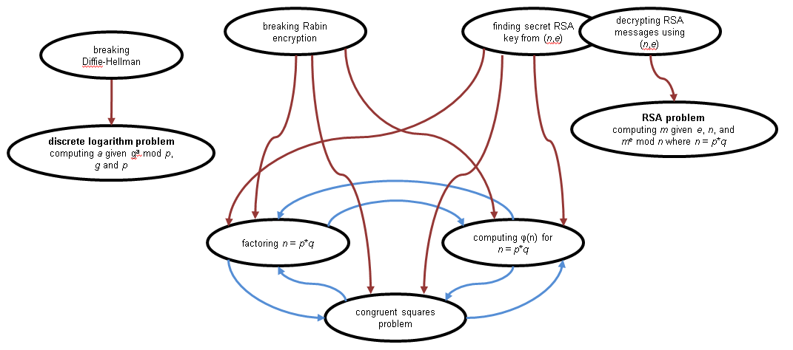

The lecture notes below are presented for archival purposes as they appeared at the time that this course was originally offered. The latest version of these notes is available at https://lapets.io/course-abstract-algebra.
NOTE: This page contains all the machine-verifiable examples presented during the lectures, as well as all the homework assignments.
Click here to go back to the main page with the course information and schedule.
Introduction
When many real-world problems are addressed or solved mathematically and computationally, the details of those problems are abstracted away until they
can be represented directly as idealized mathematical structures (e.g., numbers, sets, trees, graphs, matrices, and so on). In this course, we will
study a collection of such idealized mathematical objects: integers, groups, rings, residues, matrices, polynomials, and several others. We will
see how these structures and their properties can be used for implementing random number generators, error correcting codes,
defining simple cryptographic protocols, approximating and interpolating numerical functions, and other applications.
In covering the material for this course, we will use the standard language and conventions for discussing these mathematical structures that
have been developed by the mathematics community. You will need to become familiar with these conventions in order to find, identify, and use
the structures and techniques that have already been developed for solving certain computational problems. At the same time, we will also learn
how modern programming languages and programming paradigms can be used to implement these structures and algorithms both accessibly and efficiently.
The development and application of mathematics involves abstraction. A problem can be viewed at multiple levels of abstraction, and in
developing mathematics humans have adopted a variety of techniques that allow them to successfully employ abstraction to study natural phenomena
and solve problems.
| symbolic |
abstract meaning |
concrete meaning in
application domain |
| 2+3 |
5 |
five objects |
| {(1,2),(1,3)} |
acyclic graph |
file system |
| {(1,2),(2,3),(3,1)} |
graph with cycle |
network |
The above illustrates the different levels of abstraction that may exist for a given problem. We employ a language of symbols
to denote certain abstract structures, which may correspond to actual structures in the world. A string of symbols corresponds to a particular
abstract object. Notice that the actual object being modelled and the abstract structure behave the same way, and that this behavior
implies certain rules about how we can manipulate the symbols without changing the object that they name. For example, we can represent the same graph
using the two strings of symbols "{(1,2),(2,3),(3,1)}" and "{(1,2),(2,3),(3,1)}", or the same number of objects using "2+3", "3+2", "1+4", and so on.
Informal Motivating Example: Random Number Generation
Let us informally consider the problem of generating a sequence of random positive integers.
Random number generators are needed in many situations and applications, including:
- generating unique identifiers for database records, objects, etc.;
- generating a one-time pad for a simple encryption scheme;
- generating public and private keys for more sophisticated encryption and signature schemes;
- simulation and approximation methods that employ random sampling (Monte-Carlo, and so on).
Different applications will impose different requirements on what is and is not a sufficiently "random"
sequence of number. Suppose we adopt the following method:
- n0 = a number in the range (inclusive) 0 to 5;
- ni = (2 ⋅ ni-1 + 1) mod 6.
We can consider another method:
- n0 = an initial seed integer 104 > n ≥ 103;
- ni = only the last four digits of ni-12.
Frequent repetition of a sequence may or may not be allowed in our given application. Does the above method produce repeating numbers? How often? For
how many initial seeds? How do we choose a good seed? We can measure a physical process or component (a clock, a keyboard), but even
under these circumstances we need a way to reason about the range of random values the measurement produces, and the range of random values
the application requires. How do we begin to approach and formally characterize these aspects of the problem so that we are certain we are
meeting the requirements imposed by the application?
One way to model a random number generation process is to view it is a permutation. In fact, there is more than one way to view the process as a
permutation. We could simply count up from 0 to m and apply the same permutation to each 0 ≤ n ≤ m in order to produce the nth random
number in the sequence. Is there an efficient way (i.e., using no more memory than O(log m)) to compute a random number from each
n such that a number never repeats?
In this course we will learn about a variety of mathematical structures and their properties that will allow us to precisely specify the
above problem and others like it, to identify what solutions are appropriate for such a problem, and to implement these solutions correctly and,
where necessary, efficiently.
Review of Logic with Sets, Relations, and Operators
In this section, we will review several abstract structures and associated properties (and the symbolic language used to represent them)
that you should have already encountered in past courses. Simultaneously, we will review one way in which these structures can be
implemented and manipulated within the modern programming language Python.
As with most human languages that have developed organically over time, mathematics has a rich and often redundant vocabulary. We introduce many
terms in this section that we will use consistently in this course. However, keep in mind that there are often other synonyms within
mathematics and computer science for these structures.
Formulas (without quantifiers)
A logical formula or formula is a string of symbols that follow a certain syntax. If the formula is written using a
correct syntax, we can ask whether the formula is true or false. The symbols or, and, not, implies, and
iff are logical operators.
| formula |
true or false |
example of one possible
Python representation |
| true |
always true |
True |
| false |
always false |
False
|
| f1 and f2 |
only true if both f1 and f2 are true |
True and False |
| f1 or f2 |
true if f1 or f2 (or both) are true |
True or (False and True) |
| f1 implies f2 |
if f1 is true, then f2 must be true
or equivalently
f1 is false, or f2 is true |
|
| f1 iff f2 |
f1 and f2 are either both true or both false |
True == False |
| ¬ f |
true if f is false |
not (True or (False and True)) |
The following table may help with gaining a good intuition for the meaning of the implies operator.
meaning of
left-hand side
(premise) |
meaning of
right-hand side
(conclusion) |
meaning of
entire formula |
comments |
| true |
true |
true |
if the premise is true and the conclusion
is true, the claim of implication is true;
thus, the whole formula is true |
| true |
false |
false |
if the premise is true but the conclusion is
false, the conclusion is not implied
by the premise, so the
claim of implication
is false; thus, the formula is false |
| false |
true |
true |
if the conclusion is true on its own, it doesn't matter
that the premise is false, because anything implies
an
independently true conclusion; thus, the claim
of implication is true, and so is the
entire formula |
| false |
false |
true |
if we assume that a false premise is true, then "false"
itself is "true"; in other words, false
implies itself, so
the formula is true |
Terms: integers and term operators that take integer inputs
A term is a string of symbols that represents some kind of mathematical structure. In our case, terms will initially
represent integers or sets of integers. Terms may contain term operators. We can view these as functions that take
terms as input and return terms as output. The term operators for terms that represent integers with which we will
be working are +, -, ⋅, and mod.
| term |
what it represents |
example of one possible
Python representation |
| 0 |
0 |
0 |
| 1 |
1 |
1 |
| z1 + z2 |
the integer sum of z1 and z2 |
3 + 4
|
| z1 - z2 |
the integer difference of z1 and z2 |
(1 + 2) - 4
|
| z1 ⋅ z2 |
the integer product of z1 and z2 |
3 * 5
|
| z1 mod z2 |
the remainder of the integer quotient z1 / z2
z1 - ⌊ z1/z2 ⌋ ⋅ z2 |
17 % 5
|
| z1z2 |
product of z2 instances of z1 |
pow(2,3)
|
Formulas: relational operators and predicates dealing with integers
A term can only appear in a formula if it is an argument to a predicate. A few common predicates involving integers are
represented using relational operators (e.g, ≤, ≥).
| formula |
what it represents |
example of one possible
Python representation |
| z1 = z2 |
true if z1 and z2
have the same meaning;
false otherwise |
1 == 2 |
| z1 < z2 |
true if z1 is less than z2;
false otherwise |
4 < 3 |
| z1 > z2 |
true if z1 is greater than z2;
false otherwise |
4 > 3 |
| z1 ≤ z2 |
true if z1 is less than or equal to z2;
false otherwise |
4 <= 3 |
| z1 ≥ z2 |
true if z1 is greater than or equal to z2;
false otherwise |
4 >= 3 |
| z1 ≠ z2 |
true if z1 is not equal to z2;
false otherwise |
4 != 3 |
We can define our own predicates as well. Notice that one way we can represent these in Python is by defining a function that
return a boolean result.
| predicate definition |
example of one possible
Python representation |
| P(x) iff x > 0 and x < 2 |
def P(x): return x > 0 and x < 2 |
| Q(x) iff x > 3 |
Q = lambda x: x > 3 |
| formula |
what it represents |
example of one possible
Python representation |
| P(1) |
true |
P(1) |
| P(1) or P(2) |
true |
P(1) or P(2)
|
| Q(1) and P(1) |
false |
Q(1) and Q(1)
|
In Assignment #1, you will define the following predicates. We will also use them throughout the course.
Definition: For any x,y ∈ Z, x | y iff y/x ∈ Z.
Definition: For any y ∈ Z, y is prime iff y > 1 and for any integer x > 0, x | y implies x = 1 or x = y.
| formula |
what it represents |
| x | y |
y / x ∈ Z
x divides y
y is divisible by x
y is an integer multiple of x
y mod x = 0 |
| y is prime |
y > 1 and
x | y implies x = 1 or x = y
y > 1 and
y is divisibly only by 1 and itself |
Terms: finite sets of integers, term operators that take set inputs, and set comprehensions
The following are examples of terms the meaning of which is a finite set of integers (with the exception of the set size terms, the meaning of
which is a positive integer).
| term |
what it represents |
example of one possible
Python representation |
| ∅ |
a set with no elements in it |
set([]) |
| {1,2,3} |
{1,2,3} |
set([1,2,3]) |
| {2,..,5} |
{2,3,4,5} |
set(range(2,6)) |
| { x | x ∈ {1,2,3,4,5,6}, x > 3 } |
{4,5,6} |
set([x for x in set([1,2,3,4,5,6]) if x > 3])
|
| |{1,2,3,4}| |
4 |
len(set([1,2,3,4]))
|
The following are term operators on terms the meaning of which is a finite set of integers.
| term |
what it represents |
example of one possible
Python representation |
| S1 ∪ S2 |
{z | z ∈ Z, z ∈ S1 or z ∈ S2} |
{1,2,3}.union({4,5}) |
| S1 ∩ S2 |
{z | z ∈ Z, z ∈ S1 and z ∈ S2} |
{1,2,3}.intersection({2,3,5}) |
| |S| |
the number of elements in S |
len({1,2,3}) |
While these are not finite sets of integers, we introduce the following two set terms in order to reference them throughout the notes.
Definition: Let Z be the set of all integers.
Definition: Let N be the set of all positive integers, including 0.
| term |
what it represents |
| N |
{0, 1, 2, ...} |
| Z |
{..., -2, -1, 0, 1, 2, ...} |
Formulas: quantifiers over finite sets of integers
Suppose we define the following two Python functions that take predicates (or, more specifically, functions that represent predicates) as input.
def forall(X,P): return len(X) == len(set([x for x in X if P(x)]))
def exists(X,P):
for x in X:
if P(x):
return True
return False
def subset(X,Y): return forall(X, lambda x: x in Y)
Then we can introduce the following definitions and corresponding Python examples.
| formula |
what it represents |
example of one possible
Python representation |
| 1 ∈ {1,2,3} |
true |
1 in set([1,2,3]) |
| 4 ∈ {1,2,3} |
false |
4 in set([1,2,3]) |
| ∀ x ∈ {1,2,3}, x > 0 and x < 4 |
true |
forall(set([1,2,3]), lambda x: x > 0 and x < 4) |
| ∃ x ∈ {1,2,3}, x < 1 and x > 3 |
false |
exists(set([1,2,3]), lambda x: x < 1 or x > 3) |
| ∀ x ∈ ∅, f |
true |
|
| ∃ x ∈ ∅, f |
false |
|
Notice that when we quantify over an empty set with a universal quantifier ∀, the formula is always true. When we quantify over an empty set
with an existential quantifier, the formula is always false (since no element satisfying any formula could exist). We can see that the Python
functions for these quantifiers are consistent with this interpretation.
Exercise: Implement Python functions that correspond to formulas which can be used to define each of the following statements about
a set X and a predicate P.
- All the elements of a set X satisfy the predicate P.
def all(X, P): return forall(X, P)
def all(X, P): return len({x for x in X if P(x)}) == len(X)
- None of the elements of a set X satisfy the predicate P.
def none(X, P): return forall(X, lambda x: not P(x))
def none(X, P): return not exists(X, P(x))
def none(X, P): return len({x for x in X if P(x)}) == 0
- At most one of the elements of a set X satisfy the predicate P.
def atMostOne(X, P): return len({x for x in X if P(x)}) <= 1
def atMostOne(X, P): return one(X, P) or none(X, P)
- At least one of the elements of a set X satisfy the predicate P.
def atLeastOne(X, P): return exists(X, P)
def atLeastOne(X, P): return len({x for x in X if P(x)}) >= 1
- Exactly one of the elements of a set X satisfy the predicate P.
def one(X, P): return len({x for x in X if P(x)}) == 1
def one(X, P): return atLeastOne(X, P) and atMostOne(X, P)
Formulas: predicates dealing with finite sets of integers
The following are examples of formulas that contain relational operators dealing with finite sets of integers.
| formula |
what it represents |
example of one possible
Python representation |
| 3 ∈ {1,2,3} |
true |
3 in set([1,2,3]) |
| {1,2} ⊂ {1,2,3} |
true |
subset(set([1,2]), set([1,2,3])) |
| {4,5} ⊂ {1,2,3} |
false |
subset(set([4,5]), set([1,2,3])) |
Below are the general forms of formulas containing relational operators dealing with finite sets of integers.
| formula |
what it represents |
| z ∈ S |
true if z is an element of S; false otherwise |
| S1 ⊂ S2 |
∀ z ∈ S1, z ∈ S2 |
| S1 = S2 |
S1 ⊂ S2 and S2 ⊂ S1 |
Terms: set products and binary relations
Definition: The product of two sets X and Y is denoted X × Y and is defined to be the set of ordered pairs
(x,y) for every possible combination of x ∈ X and y ∈ Y.
| term |
what it represents |
example of one possible
Python representation |
| {1,2} × {5,6,7} |
{(1,5),(1,6),(1,7),(2,5),(2,6),(2,7)} |
set([(x,y) for x in set([1,2]) for y in set([4,5,6,7])]) |
Definition: A set R is a relation between the sets X and Y if R ⊂ X × Y.
Formulas: predicates dealing with relations
There are several common properties that relations may possess.
| predicate |
definition |
graphical example |
| X × Y is the set product of X and Y |
X × Y = { (x,y) | x ∈ X, y ∈ Y } |
|
| R is a relation between X and Y |
R ⊂ X × Y |
 |
R is a function from X to Y
R is a (many-to-one) map from X to Y |
R is a relation between X and Y and
∀ x ∈ X,
there is at most one
y ∈ Y s.t. (x,y) ∈ R
|
 |
| R -1 is the inverse of R |
R -1 = { (b,a) | (a,b) ∈ R } |
|
| R is an injection from X to Y |
R is a relation between X and Y and
∀ y ∈ Y,
there is at most one
x ∈ X s.t. (x,y) ∈ R
|
 |
| R is a surjection from X to Y |
R is a relation between X and Y and
∀ y ∈ Y,
there is at least one
x ∈ X s.t. (x,y) ∈ R
|
 |
| R is a bijection between X and Y |
R is an injection from X and Y and
R is a surjection from X and Y |
 |
| R is a permutation on X |
R ⊂ X × X and
R is a bijection between X and X |
|
| R is a reflexive relation on X |
R ⊂ X × X and
∀ x ∈ X, (x,x) ∈ R |
|
| R is a symmetric relation on X |
R ⊂ X × X and
∀ x ∈ X, ∀ y ∈ X, (x,y) ∈ R implies (y,x) ∈ R |
|
| R is a transitive relation on X |
R ⊂ X × X and
∀ x ∈ X, ∀ y ∈ X, ∀ z ∈ X,
(x,y) ∈ R and (y,z) ∈ R implies (x,z) ∈ R |
|
R is an equivalence relation on X
R is a congruence relation on X |
R ⊂ X × X and
R is a reflexive relation on X and
R is a symmetric relation on X and
R is a transitive relation on X |
|
| R is an antisymmetric relation on X |
R ⊂ X × X and
∀ x ∈ X, ∀ y ∈ X, (x,y) ∈ R and (y,x) ∈ R implies x = y |
|
| R is a partial order on X |
R ⊂ X × X and
R is a reflexive relation on X and
R is an antisymmetric relation on X and
R is a transitive relation on X |
|
Notice that we may have R such that R is a function, but R -1 is not a function.
Exercise: Write a Python function that takes a finite set of integers and builds the relation on that set corresponding
to the operator ≤.
def buildLTE(X): return {(x,y) for x in X for y in X if x <= y}
Exercise: Write a Python function that takes a relation R and a set X and determines whether R is a symmetric relation on X.
def symmetric(R,X): return subset(R, product(X,X)) and forall(R, lambda z: (z[1],z[0]) in R)
We introduce several terms that deal with the relationship between the relation and the members and subsets of the two sets that the relation involves.
| predicate |
required conditions |
| X is the domain of R between X and Y |
R is a function from X to Y |
| Y is the codomain of R between X and Y |
R is a function from X to Y |
| B is the image of R between X and Y |
R is a function from X to Y and
B = {y | x ∈ X, (x',y) ∈ R, x = x'} |
| B is the image of x under R between X and Y |
R is a function from X to Y and
B = {y | (x,y) ∈ R} |
| A is the pre-image of y under R between X and Y |
R is a function from X to Y and
A = {x | (x,y) ∈ R} |
Exercise: Implement Python functions that correspond to each of the structures above.
def domain(Xcheck,R,X,Y): return function(R,X,Y) and Xcheck == X
def codomain(Ycheck,R,X,Y): return function(R,X,Y) and Ycheck == X
def image(B,R,X,Y): return function(R,X,Y) and B == {y for (x,y) in R if x in X}
def imageElem(B,x,R,X,Y): return function(R,X,Y) and B == {y for (x2,y) in R if x2 == x}
def preimage(A,y,R,X,Y): return function(R,X,Y) and A == {x for (x,y2) in R if y2 == y}
Fact: If R is a function from X to Y and R is an injection from X to Y and R is finite, and if B is the image of R, then
|B| = |X| and (because B ⊂ Y and so |B| ≤ |Y|), we have that |Y| ≥ |X|.
Exercise: Determine whether the relation R = {(x,y) | x ∈ Z, y ∈ Z, x | y} is an equivalence relation (check whether each
of the three properties of an equivalence relation are satisfied).
Exercise: Determine whether the relation R = {(x,y) | x ∈ Z, y ∈ Z, x | y} is a partial order on Z (check whether each
of the three properties of a partial order are satisfied).
Assignment #1: Prerequisite Review: Logic, Integers, Sets, and Relations
In this assignment you will define Python functions that represent various constructs. For this assignment, you will submit
a single Python source file a1.py.
Your file may not import any modules or employ any external library functions associated with
integers and sets (unless the problem statement explicitly permits this). Solutions to each of the programming problem parts below should
fit on one or two lines. You will be graded on the correctness, concision, and mathematical legibility of your code.
The different problems and problem parts rely on each other; carefully consider whether you can use functions you define
in one part within subsequent parts.
-
- Define a Python function
divides() that takes two positive integer arguments and returns True
only if the first argument divides the second argument.
- Define a Python function
prime() that takes a single argument and returns True only if the argument is a prime
positive integer. You may use the range(), len(), and divides() functions.
- In this problem, you will implement a small algorithm that can generate arbitrarily many prime numbers.
This algorithm is very inefficient; its purpose is to serve as a programmatic argument that there
are infinitely many distinct prime numbers.
- Implement a Python function
factors that takes a single positive integer argument and returns the
set of factors of that number.
- Implement a Python function
primeFactors that takes a single positive integer argument and returns the
set of prime factors of that number.
- Implement a Python function
anotherPrime that takes a set of prime numbers and returns a new prime that
is distinct from all the others in the list. To accomplish this, compute the product p of all the prime
numbers in the set, then return a prime factor that belongs to the set of factors
of p+1.
- Implement a Python function
generatePrimes that takes a single input n and returns a set
of n distinct prime numbers. Hint: use recursion and another function you have already implemented.
- Define a Python function
implies() that takes two arguments and correctly implements the logical operator implies.
To receive credit for each part below, your solutions must employ forall, exists,
and/or list comprehensions. Solutions that are more than one or two lines in length will receive no credit.
- Define a Python function
product(X,Y) that takes two sets as arguments and returns the set product of the sets.
- Define a Python function
relation(R,X,Y) that takes three arguments and returns True only if the
first argument R is a relation between the second and third arguments X and Y.
- Define a Python function
function(R,X,Y) that takes three arguments and returns True only if the
first argument R is a function from X to Y.
- Define a Python function
injection(R,X,Y) that takes three arguments and returns True only if the
first argument R is an injection from X to Y.
- Define a Python function
surjection(R,X,Y) that takes three arguments and returns True only if the
first argument R is a surjection from X to Y.
- Define a Python function
bijection(R,X,Y) that takes three arguments and returns True only if the
first argument R is a bijection from X to Y.
- Define a Python function
transitive(R,X) that takes two arguments and returns True only if the
first argument R is a transitive relation on X.
- Define a Python function
lte(R) that takes one argument and returns True only if the
relation R is a subset of the relation represented by the relational operator <=.
Terms: set quotients and quotient maps
Given an equivalence relation on a set, we can partition that set into a collection of distinct subsets, called equivalence classes,
such that all the elements of each subset are equivalent to one another.
Definition: For any set X and equivalence relation R on X, let the quotient set of X with respect to R, denoted X/R, be defined as:
| = | | {{y | (x,y) ∈ R} | x ∈ X}
|
|
Exercise: Implement a Python function that takes two inputs (a set X and an equivalence relation R on that set), and outputs the
quotient set X/R.
def quotient(X,R): return {frozenset({z for (y,z) in R if y == x}) for x in X}
Below, we evaluate the above function on an example input.
>> quotient({1,2,3,4}, {(1,1),(2,2),(3,3),(2,3),(3,2),(4,4)})
{frozenset({4}), frozenset({2, 3}), frozenset({1})}
Definition: For a set X and a relation R over X, the relation that relates each x ∈ X to its equivalence class in X under R is called
the quotient map. The function is typically denoted using [ ... ]. That is, [x] is the equivalence class of x under R.
Exercise: Why is the relation {(x,[x]) | x ∈ X} necessarily a map? Suppose it is not a map. What would this imply?
Exercise: Implement a Python function that takes two inputs (a set X and an equivalence relation R on that set), and outputs the
quotient map taking each element x ∈ X to its corresponding equivalence class [x] ∈ X/R.
def quotientMap(X,R): return {(x, frozenset({z for (y,z) in R if y == x})) for x in X}
Exercise: Determine whether {(x,y) | x ∈ Z, y ∈ Z, x + y mod 2 = 0} is an equivalence relation.
Term operators and closure properties
We have names for several common properties that operators may possess for a given set. In the table below, We define them
precisely using logical notation.
| property |
definition |
| S is closed under ⊕ |
∀ x,y ∈ S,
x ⊕ y ∈ S |
| ⊕ is commutative on S |
∀ x,y ∈ S,
x ⊕ y = y ⊕ x |
| ⊕ is associative on S |
∀ x,y,z ∈ S,
(x ⊕ y) ⊕ z = x ⊕ (y ⊕ z) |
| ⊕ has a left identity 1 in S |
∀ x ∈ S,
1 ⊕ x = x |
| ⊕ has a right identity 1 in S |
∀ x ∈ S,
x ⊕ 1 = x |
| ⊕ has an identity 1 in S |
∀ x ∈ S,
1 ⊕ x = x ⊕ 1 = x |
| ⊗ distributes across ⊕ in S |
∀ x,y,z ∈ S,
x ⊗ (y ⊕ z) = (x ⊗ y) ⊕ (x ⊗ z) |
Modular Arithmetic
Modular arithmetic can be viewed as a variant of integer arithmetic in which we introduce a congruence (or equivalance) relation on the integers
and redefine the integer term operators so that they are defined on these congruence (or equivalance) classes.
Terms: congruence classes in Z/mZ and term operators on congruence classes
Definition: For any
m ∈ Z, define:
Definition: For any
m ∈ Z, define:
Exercise: Show that the relation R = {(x,y) | x ∈ Z, y ∈ Z, x mod 17 = y mod 17} is an equivalence relation.
Definition: For a given
m ∈ Z, define:
| = | | Z/{(x,y) | x ∈ Z, y ∈ Z, x mod m = y mod m}
|
|
Informally and intuitively, we could think of the structure of the above set as a logical consequence of letting all multiples of m be equivalent to 0.
That is, if 0 = m = 2m = ..., then 1 = m + 1 = 2m + 1 = ..., and so on.
| term |
what it represents |
z
z mod m
z + mZ |
{z + (a ⋅ m) | a ∈ Z} |
| c1 + c2 |
{(x + y) | x ∈ c1, y ∈ c2} |
| c1 - c2 |
{(x - y) | x ∈ c1, y ∈ c2} |
| c1 ⋅ c2 |
{(x ⋅ y) | x ∈ c1, y ∈ c2} |
| cz |
c ⋅ ... ⋅ c |
| c! |
c ⋅ (c-1) ⋅ (c-2) ⋅ ... ⋅ 1 |
Fact: For a fixed number m, the relation {(n, {x | x ∈ Z, n mod m = x mod m) | n ∈ Z} is a quotient map from Z to Z/mZ.
Formulas: relational operators dealing with congruence classes in Z/mZ
| formula |
what it represents |
| c1 ≡ c2 |
true only if c1 = c2 where "=" is set equality
applied to the congruence classes c1 and c2;
false otherwise |
Algebra of congruence classes
We use the familiar symbols 0, 1, +, -, and ⋅ to represent operations on congruence classes. When these symbols are used to
represent operations on integers, they have certain algebraic properties. Do the operations on congruence classes also share the familiar
algebraic properties of the corresponding operations on integers?
Example: Suppose we write the term 3 + 4 ≡ 2 where 2, 3, and 4 are congruence classes in Z/5Z. What is the meaning
of this term? First, note the following equivalence.
| { x + y | x ∈ Z, y ∈ Z} = {z | z ∈ Z }
|
|
Now, we expand the definitions of congruence classes and the operation + on congruence classes below.
| ≡ | |
| = | | {3 + a ⋅ 5 | a ∈ Z} + {4 + b ⋅ 5 | b ∈ Z} |
|
| = | | {(x + y) | x ∈ {3 + a ⋅ 5 | a ∈ Z}, y ∈ {4 + b ⋅ 5 | b ∈ Z}} |
|
| = | | {(3 + a ⋅ 5) + (4 + b ⋅ 5) | a ∈ Z, b ∈ Z} |
|
| = | | {(3 + 4) + (a ⋅ 5) + (b ⋅ 5) | a ∈ Z, b ∈ Z} |
|
| = | | {2 + 5 + (a ⋅ 5) + (b ⋅ 5) | a ∈ Z, b ∈ Z} |
|
| = | | {2 + (1 + a + b) ⋅ 5 | a ∈ Z, b ∈ Z} |
|
| = | |
| ≡ | |
| ≡ | |
Fact: The set Z/mZ is closed under the operation represented by +.
Fact: It is the case that Z/mZ = {0,...,m-1} where 0,...,m-1 are congruence classes, and thus, |Z/mZ| = m.
Fact: The addition operation on congruence classes represented by + is commutative.
Suppose that a and b are congruence classes in Z/mZ. We know that a + b and b + a are also congruence classes (they are sets). We want
to show that:
| ≡ | |
| ≡ | |
|
{(x+y) mod m | x ∈ (a + mZ), y ∈ (b + mZ)} | |
| = | | {(y+x) mod m | y ∈ (b + mZ), x ∈ (a + mZ)}
|
|
Notice that the last line above is
set equality. Thus, it is sufficient to show that:
| {(x+y) mod m | x ∈ (a + mZ), y ∈ (b + mZ)} | |
| ⊂ | | {(y+x) mod m | y ∈ (b + mZ), x ∈ (a + mZ)} |
|
|
{(y+x) mod m | y ∈ (b + mZ), x ∈ (a + mZ)} | |
| ⊂ | | {(x+y) mod m | x ∈ (a + mZ), y ∈ (b + mZ)}
|
|
To show the first relationship, we must show that for every integer in {(
x+
y) mod
m |
x ∈ (
a +
mZ),
y ∈ (
b +
mZ)}, that
integer is also in {(
y+
x) mod
m |
y ∈ (
b +
mZ),
x ∈ (
a +
mZ)}. Because we know that
x +
y =
y +
x when
x and
y are integers,
it must also be that for any
x,
y ∈ Z:
Thus, for every (
x +
y) mod
m in the first set, there is a corresponding (
y +
x) mod
m in the second set, so the subset relation holds.
The argument also works in the other direction. Thus, the two sets are equivalent, so the congruence holds, and + defined on congruence classes
is commutative.
| property |
definition |
| Z/mZ is closed under + |
∀ x,y ∈ Z/mZ,
x + y ∈ Z/mZ |
| + is commutative on Z/mZ |
∀ x,y ∈ Z/mZ,
x + y ≡ y + x |
| + is associative on Z/mZ |
∀ x,y,z ∈ Z/mZ,
(x + y) + z ≡ x + (y + z) |
| + has a (left and right) identity 0 in Z/mZ |
∀ x ∈ Z/mZ,
0 + x ≡ x and x + 0 ≡ x |
| Z/mZ has inverses with respect to + |
∀ x ∈ Z/mZ,
(m - x) + x ≡ 0 |
| Z/mZ is closed under ⋅ |
∀ x,y ∈ Z/mZ,
x ⋅ y ∈ Z/mZ |
| ⋅ is commutative on Z/mZ |
∀ x,y ∈ Z/mZ,
x ⋅ y ≡ y ⋅ x |
| + is associative on Z/mZ |
∀ x,y,z ∈ Z/mZ,
(x ⋅ y) ⋅ z ≡ x ⋅ (y ⋅ z) |
| + has a (left and right) identity 1 in Z/mZ |
∀ x ∈ Z/mZ,
1 ⋅ x ≡ x and x ⋅ 1 ≡ x |
| ⋅ distributes across + in Z/mZ |
∀ x,y,z ∈ Z/mZ,
x ⋅ (y + z) ≡ (x ⋅ y) + (x ⋅ z) |
Fact: For any congruence classes a, b, c ∈ Z/mZ, a ≡ b implies a + c ≡ b + c.
To show this is true, consider any (x + z mod m) ∈ (a + c) and any (y + z mod m) ∈ (b + c). As in the previous proof, we have that:
Thus, the two congruence classes contain the same elements, so they are equivalent.
Fact: For any congruence classes a, b, c ∈ Z/mZ, a ≡ b implies a - c ≡ b - c.
We can adjust the argument above in the following way:
We saw that we can add and subtract from both sides of an equation involving congruence classes. Can we also divide both sides by the same factor (or
"cancel" that factor) in such an equation? We can do so under certain conditions. In order to show that we can do so, we need a few preliminary
facts.
Fact: For any a, m ∈ Z, a mod m = 0 iff that m | a.
If a mod m = 0 then:
If m | a then:
Fact: For any
a,
b,
c ∈ N, if
c|
a then
c|(
a ⋅
b).
Because c|a, it must be that a/c ∈ Z. But then we have that:
| (a ⋅ b) / c = (a / c) ⋅ b
|
|
Since (
a /
c)
∈ Z and
b ∈ Z, (
a /
c) ⋅
b ∈ Z and (
a ⋅
b) /
c ∈ Z. Thus,
c|(
a ⋅
b).
Fact (Euclid's lemma): For any a, b, p ∈ N, if p is prime and p | (a ⋅ b), then it must be that p|a or p|b (or both).
Fact: For any congruence classes a, b, c ∈ Z/pZ, if c is not divisible by p then a ⋅ c ≡ b ⋅ c implies a ≡ b.
We observe that:
| ≡ | |
| ≡ | |
|
((a ⋅ c) - (b ⋅ c)) mod p | |
| = | |
| = | |
| | | |
By Euclid's lemma, the fact that
c is not divisible by
p requires that
a -
b must be divisible by
p. Thus:
Fact: For any
p ∈ N, for any
a ∈ {1,...,
p-1}, if
p is prime then the following is a permutation from {1,...,
p-1} to
Z/
pZ - {0} (the non-zero congruence classes in
Z/
pZ):
| = | | { (1, (1 ⋅ a) mod p), (2, (2 ⋅ a) mod p), ..., (p-1, ((p-1) ⋅ a) mod p) } |
|
| = | | { (i, (i ⋅ a) mod p) | i ∈ {1,...,p-1} }
|
|
Recall that R is a permutation if R is a bijection. In order to be a bijection, R must be both an injection and a surjection.
To show that R is an injection, suppose that it is not. We will derive a contradiction from this assumption, which
will tell us that the assumption must be false.
If it is not injective, then there exist distinct non-zero i ∈ {1,...,p-1} and j ∈ {1,...,p-1} where without loss of generality
j < i such that:
| ≠ | |
| = | |
|
((i ⋅ a) - (j ⋅ a)) mod p | |
| = | |
| = | |
| | | |
But because
a <
p,
p does not divide
a, so the above implies that
p | (
i -
j). But this is also impossible because
p >
i -
j > 0. Also, notice that in the
above, we could have simply divided both sides of the second line by
a because
p does not divide
a.
Since assuming that distinct i and j can be related to the same element of the relation's codomain
leads to a contradiction, it must be impossible. Thus, R is an injection.
Furthermore, R is an injection from {1,...,p-1} to Z/pZ - {0} and we have that:
Thus, since
R maps to at least
p-1 distinct elements, and |
Z/
pZ - {0}| has at most
p-1
elements,
R must map to every element in
Z/
pZ - {0}, so it is also a surjection by the
Pigeonhole principle.
Since R is both an injection and a surjection from {1,...,p-1} to Z/pZ - {0}, it must be a bijection, and thus a permutation.
Notice that if we extend R by adding (0,0), it is now a permutation from {0,...,p-1} to Z/pZ.
Example: Random Number Generation
Suppose we want to find a way to generate a "random" sequence v of positive integers. Assume we have only one requirement.
Requirement 1: The sequence v has m distinct positive integers between 0 and m-1, where vi is the ith element in the sequence.
In this case, a relation R ⊂ N × Z/mZ that is a permutation would be sufficient. One such relation is:
| = | |
| = | |
| = | | {(i, vi) | i ∈ {0,...,m-1}}
|
|
Notice that the second term in (
x,
x mod
m) is in this case the
congruence class modulo
m that corresponds to
x.
The relation R0 is indeed a permutation, but it does not satisfy our intuitive notion of a random sequence, so we impose another requirement.
Requirement 2: The sequence v must not be the trivial sequence (0,...,m-1).
Suppose we propose the following relation:
| = | |
| = | |
| = | | {(i, vi) | i ∈ {0,...,m-1}}
|
|
Notice that we can redefine
R1 above more concisely:
| = | | {(i, (0 + 2 ⋅ i) mod m) | i ∈ {0,...,m-1}}
|
|
Does
R1 always satisfy both requirements? Suppose that
m is even. Then we have that there exists
j ∈ {0,...,
m-1} such that 2 ⋅
j =
m. But
this means that 2 ⋅
j ≡ 0, so 2 ⋅ (
j+1) ≡ 2 ⋅
j + 2 ⋅ 1 ≡ 2 ⋅ 1 ≡ 2 and so on. This means that
R1 is
not injective, so the first requirement is not met when
m is even.
Suppose we define R2 to be a variant of R1 parameterized by some b ∈ {0,...,m-1}:
| = | | {(i, (0 + b ⋅ i) mod m) | i ∈ {0,...,m-1}}
|
|
What conditions can we impose on
b and
m so that they satisfy both requirements?
Fact: If m is prime and b ∈ {2,...,m-1}, then R2 satisfies both requirements.
We know this is true because in this case, R is a permutation, so it satisfies Requirement 1. Furthermore, element v1 = b, so
v is never the trivial sequence. Thus, Requirement 2 is satisfied.
Exercise: What are some drawbacks (or unresolved issues) with building random sequences by choosing a prime m and some b ∈ {2,...,m-1}?
Generating and detecting prime numbers
Many applications require the generation of new primes. We saw a simple example above in which generating new random sequences required
the generation of new primes. Another important class of applications with this requirement are cryptographic schemes and protocols. In this
section, we consider the problem of generating prime numbers.
As you saw in Assignment 1, a straightforward algorithm that is guaranteed to generate
new prime numbers is not necessarily efficient. In practice, most algorithms that need to generate large primes simply choose a range of
of numbers and filter out non-primes using some efficient algorithm that does not provide an absolute guarantee that the numbers
that remain are all prime. As long as it is not too likely that the generated number is not a prime, this may be sufficient.
Example: Suppose we want to generate a d-digit prime number (in decimal representation).
The prime number theorem states that for a given N, the number of primes in the
range {2,...,N} is about N/(ln(N)). We can roughly estimate the number of primes with d-digit decimal representations using
the following formula:
| (10d+1-1 / ln(10d+1-1)) - (10d / ln(10d))
|
|
For
d = 8, this value is about 4,780,406, so we can roughly say that the chances that a chosen 8-digit number is prime are about:
| 4,780,406/((109 - 1) - 108) ≈ 5.5/100
|
|
Suppose we defined the following algorithm for generating a prime with a d-digit representation.
- inputs: d ∈ N
-
do
- n := a number from {10d, ..., 10d+1-1}
while n is not prime
- return n
Assuming we were choosing numbers "well" with respect to their distribution (we are being imprecise here), we could optimistically hope that
for d = 8, the above algorithm would only need to check for primality about 20 times (since roughly 1 out of every 20 numbers it tries should be
a prime).
It remains to define an algorithm for checking whether an arbitrary input m ∈ N is prime. We could check every number k between 2 and
⌊ √(m) ⌋ to see if it is a factor of m. However, ⌊ √(m) ⌋ still grows exponentially in the representation
size of m. For example, for an n-bit input, an integer m in {0,...,2n-1} which must have a representation size of at least n bits, we have
the following exponential running time:
If we only consider primes and not any of their multiples (i.e., we apply
the Sieve of Eratosthenes to the set {2,...,⌊ √(m) ⌋}), we can
decrease the number of times we check the divisibility of m. However, we would need to do a lot of extra work to filter out the multiples
of primes. Modern algorithms such as
ECPP run in polynomial time, in practice it is currently difficult
to implement a version of these algorithms that runs quickly enough for many applications. Thus, we instead modify our algorithm in the
following way:
- inputs: d ∈ N
-
do
- n := a number from {10d, ..., 10d+1-1}
while n is not probably prime
- return n
It remains to define a subroutine for checking whether a number is probably prime (for some appropriate definition of
"probably") that is very efficient.
Greatest common divisor and related facts
Definition: For any two
x,
y ∈ Z, we define the
greatest common divisor, denoted gcd(
x,
y), as the greatest
integer
z ∈ Z such that
z|
x and
z|
y. Equivalently, we can define it as the maximum of a set:
| = | | max{ z | z ∈ Z, z|x, z|y}
|
|
We can also define it recursively (not that
z|0 for all
z ∈ Z because 0/
z ∈ Z):
To see why the recursive case works, consider two cases. If x < y, then the two inputs are simply reversed. This ensures that the
first input x is eventually larger than the second input y. If x ≥ y and they share a greatest common divisor a,
then we have for n = ⌊ x/y ⌋
that:
Notice that (x' - n ⋅ y') ⋅ a < x' ⋅ a, but that the new smaller value is still a multiple of a, so the greatest common
divisor of this value and y is still a.
Fact: For any x ∈ Z, y ∈ Z, x|y iff gcd(x,y) = x.
Definition: For any x ∈ Z, y ∈ Z, x and y are relatively prime, relative primes, and coprime iff gcd(x,y) = 1.
Fact (Euclid's lemma generalization): For any a, b, c ∈ N, if a | (b ⋅ c)
and a and b are relatively prime, then it must be that a|c.
Fact: For any a ∈ N and m ∈ N, if gcd(a,m) = 1, then {(i, (i ⋅ a) mod m) | i ∈ {0,...,m-1}} is a permutation.
The above can be proven by noticing that if gcd(a,m) = 1, then a does not divide m and m does not divide a.
Notice that in the proof of
this statement in which p was prime, the fact that it was prime was not used.
Fact: For any m ∈ Z where m ≥ 2, gcd(m,m+1) = 1.
We prove the above by contradiction. Suppose there exists a factor z > 1 of m and m+1. In other words, gcd(m,m+1) > 1. Then we have
that:
If
z > 1 then 1/
z ∉
Z, so (
b -
a) ∉
Z. Since
b-
a ∈ Z, this is a contradiction, so it must be that gcd(
m,
m+1) =
z = 1.
Notice that the prime number generator in Assignment 1 relies on the above fact: for a product p of known
prime numbers, it is guaranteed that p+1 shares no factors with p, so any prime factors it has must be new.
Testing whether a number is probably prime
In this section, we consider the problem of defining a very efficient algorithm to check whether a positive integer m ∈ N is prime.
In fact, the algorithm we consider will be detectors of some, but not all, composite numbers.
Fact: For any n ∈ N, n is composite iff n > 1 and it is not the case that n is prime.
That is, the algorithms we consider recognize prime numbers but with false positives.
They only guarantee that there are no false negatives (i.e., if the algorithm outputs that its input is composite, then
it is indeed composite; otherwise, the number may or may not be prime and we call it probably prime because we were not able to
detect that it is composite). First, consider how an algorithm for checking primality that never has a "false" output behaves:
| algorithm input |
algorithm output |
meaning |
comment |
actually a composite number
(this is not known at time of input) |
composite |
the input is composite |
true negative |
actually a prime number
(this is not known at time of input) |
prime |
the input is prime |
true positive |
Compare the above table to the following table describing three possible conditions (and one forbidden condition) for an algorithm that detects
probably primes.
| algorithm input |
algorithm output |
meaning |
comment |
actually a composite number
(this is not known at time of input) |
composite |
the input is definitely composite |
true negative |
actually a composite number
(this is not known at time of input) |
probably prime |
the input is either composite or prime |
false positive |
actually a prime number
(this is not known at time of input) |
probably prime |
the input is either composite or prime |
true positive |
actually a prime number
(this is not known at time of input) |
composite |
impossible |
false negative
(we will not consider such algorithms) |
We now define our first algorithm for testing whether a number is probably prime.
- inputs: m ∈ N, k ∈ N
-
repeat k times:
- a := a number from {2,...,m-1}
- if gcd(a,m) ≠ 1 then return composite
- return probably prime
The above algorithm is somewhat problematic if we want to have a good idea of how to set k given our desired level of confidence
in the output. For example, how high should k be so that the probability that we detect a composite is more than 1/2?
If we require that k ≈ √(m) to be sufficiently confident in the output, we might as well use the brute force
method of checking every a ∈ {2,..., ⌊ √(m) ⌋}.
To define a more predictable testing approach for our algorithm, we derive a theorem that is frequently used in applications
of modular arithmetic (in fact, this fact underlies the prime number generators found in many software applications).
Fact (Fermat's little theorem): For any
p ∈ N, for any
a ∈ {0,...,
p-1}, if
p is prime then it is true that:
We have already shown that if p is a prime then R defined as below is a permutation:
| = | | { (1, (1 ⋅ a) mod p), (2, (2 ⋅ a) mod p), ..., (p-1, ((p-1) ⋅ a) mod p) } |
|
| = | | { (i, (i ⋅ a) mod p) | i ∈ {1,...,p-1} }
|
|
Next, to make our notation more concise, note that:
| = | |
|
(1 ⋅ a) ⋅ (2 ⋅ a) ⋅ ... ⋅ ((p-1) ⋅ a) | |
| = | |
|
Recall that p is prime, so p does not divide (p - 1)!. Thus, we can divide by (p - 1)! both sides of the following equation:
We now have derived the statement of the theorem.
Fact: A number p ∈ N is prime iff p > 1 and for all a ∈ {1,...,p-1}, ap-1 mod p = 1.
If we negate the statement above, we can define
when a number is composite (i.e., when it is not prime) in a way that suggests a straightforward algorithm.
Definition: A number m ∈ N is composite iff m > 1 and there exists a ∈ {1,...,m-1} such that am-1 mod m ≠ 1. In this case,
a is a Fermat witness to the compositeness of m.
Definition: If for composite m ∈ N and a ∈ {1,...,m-1}, we have that am-1 mod m = 1, then a is a Fermat liar and
m is a pseudoprime with respect to a.
Fact: We now extend our algorithm. The following algorithm can be used to test whether a number is probably prime.
Algorithm (Fermat primality test):
- inputs: m ∈ N, k ∈ N
-
repeat k times:
- a := a number from {2,...,m-1}
- if gcd(a,m) ≠ 1 then return composite
- else if am-1 mod m ≠ 1 then return composite
- return probably prime
If m is a prime, the above algorithm will always return probably prime.
For any given candidate a in the above algorithm, if the first test fails and gcd(a,m) ≠ 1 then a is a factor of m. Thus, in the worst case,
the first is gcd(a,m) = 1 for all k instances of a that we consider. How many of these k instances must pass
the second test before we are confident that m is prime? In fact, for most composite numbers m, k can be very low.
Fact: If for a composite m ∈ Z there is at least one Fermat witness a ∈ {2,...,m-1} such that gcd(a,m) = 1,
then at least half of all a such that gcd(a,m) = 1 are Fermat witnesses.
Suppose that a is a Fermat witness and a1,...,an are distinct Fermat liars. Then for every Fermat liar we have that:
But a is a Fermat witness, so an-1 mod m ≠ 1. Thus, (a ⋅ ai)n-1 mod m ≠ 1, so a ⋅ ai
is also Fermat witness. Since there is a witness for every liar, there are at least as many witness as liars, so at least half
the values are witnesses.
How many numbers m have at least one Fermat witness? Equivalently, how many numbers have no Fermat witnesses?
Definition: For any m ∈ Z, if m has no coprime Fermat
witnesses, then m is a Carmichael number, also known as a
Fermat pseudoprime.
The distribuation of Carmichael numbers is high enough that the Fermat primality test is usually not used in favor of slightly
more complex tests for probable primes. However, those tests follow a similar principle. The Fermat primality test is used in some
deployed software applications (such as PGP).
for the chosen
a we have... |
what it means |
probability of this occurring
if m is a non-Carmichael composite |
| gcd(a,m) ≠ 1 |
m and a have a non-trivial factor,
so m is composite |
(# integers in {2,...,m-1} that share factors with m) / (m-2) |
| am-1 mod m ≠ 1 |
a is a Fermat witness
that m is composite |
at least 1/2 |
Assignment #2: Modular Arithmetic, Random Sequences, and Primes
For this assignment, you will submit a single Python source file a2.py.
Your file may not import any modules or employ any external library functions associated with
integers and sets (unless the problem statement explicitly permits this).
You will be graded on the correctness, concision, and mathematical legibility of your code.
The different problems and problem parts rely on each other; carefully consider whether you can use functions you define
in one part within subsequent parts.
- To receive credit for each part below, your solutions must employ
forall, exists,
and/or list comprehensions. Solutions that are more than 2-5 lines in length will receive no credit.
- Define a Python function
commutative(op,S) that takes two arguments and returns True only if the
first argument op, an operator that takes two arguments, is commutative on the finite set S.
def commutative(op,S) :
return forall(S, lambda x: forall(S, lambda y: op(x,y) == op(y,x)))
- Define a Python function
associative(op,S) that takes two arguments and returns True only if the
first argument op, an operator that takes two arguments, is associative on the finite set S.
def associative(op,S) :
return\
forall(S, lambda x: forall(S, lambda y: forall(S, lambda z:\
op(op(x,y),z) == op(x,op(y,z)))))
- Define a Python function
identity(op,S) that takes two arguments and returns True only if the
first argument op (which is itself a function that takes two arguments) has an identity element in S.
Note that the identity must be both a left and right identity.
# It is important to have the right order for the quantifiers.
# There must exist at least one identity element that behaves
# like the identity for /all/ the elements of S:
#
# exists i in S s.t. for all x in S, op(x,i) == op(i,x) == x
#
# Notice that this is different from a statement such as the one
# below:
#
# for all x in S, exists i in S s.t. op(x,i) == op(i,x) == x # Incorrect.
#
def identity(op,S) :
return exists(S, lambda i: forall(S, lambda x: op(x,i) == op(i,x) == x))
- Define a Python function
inverses(op,S) that takes two arguments and returns True only if for
every element in S, there is an inverse element with respect to op.
Note that this is only possible if there is an identity with respect to op. You may want to write a few
helper functions in order to avoid deeply-nested quantifiers.
# The following is the correct formula:
#
# there exists i in S s.t.
# i is an identity for S
# and
# for all x in S, exists y in S s.t. op(x,y) == i
#
# However, equivalents of the following will also be
# accepted:
#
# for all x in S, exists y in S s.t.
# op(x,y) == i and i is an identity for S
#
# For either of the above, "i is an identity for S" should
# be a formula equivalent to:
#
# for all x in S, op(x,i) == op(i,x) == x
#
# Since we did not explicitly specify whether the identity
# must be left- or right-, "op(x,i) == x" or "x == op(x,i)"
# alone would be sufficient.
def inverses(op,S) :
return\
exists(S, lambda i:\
#i is an identity
forall(S, lambda x: op(i,x) == op(x,i) == x)\
and\
forall(S, lambda x: exists(S, lambda y: op(x,y) == i)))
-
- Define a Python function
randFromPrime() that takes a single input p, a prime number,
and generates a set of p distinct
lists, each of length p, and each being a "random" reording of the list [ i for i in range(0,p) ].
- Each list must contain
p distinct integers from the set { i for i in range(0,p) }.
- No individual list should be an ascending or descending sequence of the integers from
{ i for i in range(0,p) }.
- Define a Python function
rand() that takes a single input n (which might not be prime)
and generates a set of n distinct
lists, each of length n, and each being a "random" reording of the list [ i for i in range(0,n) ].
- Each list must contain
n distinct integers from the set { i for i in range(0,n) }.
- No individual list should be an ascending or descending sequence of the integers from
{ i for i in range(0,n) }.
You may find the following points useful:
- Implement the gcd function.
- Recall the fact that if gcd(a,m) = 1, then {(i, (i ⋅ a) mod m) | i ∈ {0,...,m-1}} is a permutation.
Implement an algorithm that finds a suitable a quickly for a given m (think about how you can use the gcd
function to accomplish this).
- Python provides a built-in function
floor(). To use it, add from math
import floor to the top of your file.
- Extra credit:
Define a Python function
randExtra() that takes a single input n (which might not be prime)
and generates a set of n*n distinct
lists, each of length n, and each being a "random" reording of the list [ i for i in range(0,n) ].
- Each list must contain
n distinct integers from the set { i for i in range(0,n) }.
- No individual list should be an ascending or descending sequence of the integers from
{ i for i in range(0,n) }.
-
- Define a Python function
randByIndex() that takes two inputs n and i. It should return
the ith element in a "random" sequence of length n that contains every number in the set
{ k for k in range(0,n) }. You should not generate the whole list of length n in memory.
-
- Define a Python function
generatePrime() that takes a single input d and generates a d-digit (in base 10)
probable prime. Your algorithm should be efficient enough to fairly quickly generate a 1000-digit probable prime, and should not run out
of memory (although it may take quite some time) when generating a 10000-digit probable prime.
- Make use of your solution from Problem #3 above.
- Define a separate helper function
probablePrime() that checks if its input is a probable prime.
- Python provides a built-in function
pow(a,b,m) that efficiently computes ab mod m.
- For the purposes of this assignment, you need not handle Carmichael numbers in any special way that avoids the high
likelihood that they are categorized as probably prime. Thus, you may use the Fermat primality test.
Chinese remainder theorem and applications
Theorem (Chinese remainder theorem): Given primes
p1,...,
pk ∈ N, for any
a1,...,
ak ∈ Z there exists a solution
x ∈ Z to the system of equations:
We can also state the theorem in terms of congruences.
Given primes
p1,...,
pk ∈ N, for any
a1 ∈ Z/
p1Z, ...,
ak ∈ Z/
pkZ there exists a
unique
solution
x ∈ Z/(
p1 ⋅ ... ⋅
pk)
Z to the system of equations:
In other words, all the solutions to the first system above are from the same congruence class of
Z/(
p1 ⋅ ... ⋅
pk)
Z.
The theorem applies even if
p1,...,
pk are only
relatively prime.
Example: Suppose we want to perform a large number of arithmetic operations in sequence (e.g., 22048 operations). However,
we know that the final result of the computation will be less than 2256. Since there are 22048 operations, half of these may
be addition by 1, and half may be subtraction by 1. In that case, the maximum value at any given moment will be
22047. How many bits of working memory do we need to perform all the operations in sequence to obtain the final result?
Choose p1,...,p32 such that for all i ∈ {1,...,32}, 28 < pi < 216. Notice that
However, since
pi < 2
16 for all
i, we only need 32 ⋅ 2
16 = 2
21 bits to represent any single point in the computation.
Once we obtain the results
a1,...,
a32, we can apply the Chinese remainder theorem to obtain
x. Since the product of the primes
is greater than 2
256, the value
x will be the result of the computation.
Example (variant of range ambiguity resolution): Suppose we want to build a radar or other sensing device that sends
signals out and listens for reflections of those signals
in order to detect the distances of obstacles in the environment. The device has a clock that counts up from 0, one integer per second.
If the device sends a single signal out that travels at 1 km per second at time 0 and receives a response in 12 seconds at time 12,
it knows that the distance to the object and back is 12 km.
However, what if we cannot wait 12 seconds or more? For example, the obstacle may be moving quickly and we want to constantly update
our best guess of the distance to that object. We would need to send signals more frequently (for example, every 5 seconds). But then
if an object is 12 seconds away, we would have no way to tell when running in a steady state which of the signals we just received.
However, we can obtain some information in this scenario. Suppose we send a signal every 5 seconds, only when the clock's timer is at
a multiple of 5. Equivalently, imagine the clock counts up modulo 5 (i.e., 0,1,2,3,4,0,1,2,3,4,0,...) and we only send signals when
the clock is at 0. What information can we learn about the object's distance in this scenario? If the distance to the object and back
is d, then we would learn d mod 5, because we would get the signal back when the clock is at 0, 1, 2, 3, or 4.
We can use multiple instances of the above device (each device using its own distinct frequency for sending signals)
to build a device that can check for obstacles more frequently while not giving up too
much accuracy. Pick a collection of primes p1,..., pn such that their product is greater than the distance to any possible obstacle
(e.g., if this is a ship or plane, we could derive this by considering the line of sight and the Earth's curvature). Take n instances
of the above devices, each with their own clock that counts in cycles through Z/piZ and sends out a signal when the clock is at 0.
Running in a steady state, if at any point in time the known offsets are a1,...,an, we would know the following about the distance d to an obstacle:
We can then use the Chinese remainder theorem to derive the actual distance
d <
p1 ⋅ ... ⋅
pn.
Example (Shamir secret sharing): Suppose there are N participants and we want to divide some secret information among them into N parts
so that any k or greater number of participants can reconstruct the secret information, but no subset of fewer than k participants can reconstruct
it. Let s ∈ Z be the secret information.
Collect a set of randomly chosen relatively prime integers M = {m1,...,mN} such that:
- the product of any collection of at least k integers in M is greater than s;
- the product of any collection of k-1 integers in M is less than s.
Give each participant
i ∈ {1,...,
N} the value
s mod
mi. Now, any number of participants
n ≥
k can
use the Chinese remainder theorem to solve for
s.
Note: There are many alternative ways to implement Shamir secret sharing. Consider the following example using curve-fitting.
We choose some large m ∈ Z, and then randomly select integers c1,...,ck ∈ Z/mZ.
We then use these integers as coefficients in a polynomial:
| = | | s + c1 x + c2 x2 + ... + ck xk
|
|
Each participant
i ∈ {1,...,
N} is given
f(
i). Any
k participants can now use curve-fitting techniques or techniques for
solving collections of equations (e.g., computing the reduced row echelon form of a matrix) to determine all the coefficients of
f and, thus,
solve for
s.
Fact (Bézout's identity): For any two integers
x ∈ Z,
y ∈ Z where
x ≠ 0 or
y ≠ 0, let
z = gcd(
x,
y). Then
there exist
a ∈ Z and
b ∈ Z such that:
Fact: For any two integers
x ∈ Z,
y ∈ Z where
x ≠ 0 or
y ≠ 0, and gcd(
x,
y) = 1, there exist
a ∈ Z and
b ∈ Z
such that:
This fact is a special case of Bézout's identity (i.e., the case in which gcd(
x,
y) = 1).
Fact: The collection of equations considered in the Chinese remainder theorem can be solved constructively (i.e., in a way that provides
a concrete solution and not just a proof that a solution exists) by applying an extended version of the greatest common divisor
algorithm. We provide the definition of the algorithm below.
- extended Euclidean algorithm: x ∈ Z, y ∈ Z
-
- if y = 0
- (s,t) := (1, 0)
- return (s,t)
- otherwise
- (s,t) := extended Euclidean algorithm(y, x mod y)
- return (t, s - (⌊ x/y ⌋ ⋅ t) )
Given two inputs x ∈ Z, y ∈ Z, the extended Euclidean algorithm returns two integres u, v such that
Fact: For two coprime
m ∈ Z and
n ∈ Z and any
a ∈ Z and
b ∈ Z, suppose we have the following system:
Since gcd(
m,
n) = 1, we can use the extended Euclidean algorithm to find
u and
v ∈ Z such that:
Then the solutions to the system are in the congruence class:
| ≡ | | (u ⋅ m) ⋅ b + (v ⋅ n) ⋅ a (mod (m ⋅ n))
|
|
We can check that the above is indeed a solution to x ≡ a (mod m). Consider the following:
Furthermore, we have that:
Then, we can conclude:
| ((u ⋅ m) ⋅ b + (v ⋅ n) ⋅ a) mod m | |
| = | |
| = | |
| = | |
Using a similar argument, we can show that the solution is also equivalent to
b (mod
m).
Example: Suppose we want to solve the following system:
We use the extended Euclidean algorithm to find that:
Then the solutions to the system are in the congruence class:
| ≡ | | (-24 ⋅ 100) ⋅ 31 + (49 ⋅ 49) ⋅ 23 (mod (100 ⋅ 49)) |
|
| ≡ | |
| ≡ | |
Fact: Suppose we are given a collection of equations of the following form such that
m1,...,
mk are all pairwise coprime.
Let C be the set of these equations, where Ci is the ith equation. The following algorithm can be used to find a solution for this
system of equations.
- solve system of equations: C is a set of constraints x ≡ ai mod mi
-
- while |C| > 1
- remove two equations Ci and Cj from C and solve them to obtain a new equation x ≡ c (mod mi ⋅ mj)
- add the new equation to C
- return the one equation left in C
Euler's totient function, multiplicative inverses in Z/mZ, and applications
Fact: For any
m ∈ N, every element in the set
Z/
mZ has an inverse with respect to addition defined over
Z/
mZ (i.e., an
additive inverse).
Consider any
x ∈ Z/
mZ. Then
p -
x ∈ Z/
mZ and
We denote by -
x the additive inverse of
x.
Example: What is the additive inverse of 2
∈ Z/5
Z?
The additive inverse is 5-2 = 3, since 2 + 3 mod 5 = 0.
Fact: For any
m ∈ N, an
x ∈ Z/
mZ has an inverse with respect to multiplication defined over
Z/
mZ
(i.e., a
multiplicative inverse)
iff gcd(
x,
m) = 1. If a multiplicatice inverse
a ∈ Z/
mZ of
x exists, then:
We usually denote the multiplicative inverse of
x using the notation
x -1.
Definition: For any input
m ∈ N, define
Euler's totient function φ by:
| = | | |{k | k ∈ {1,...,m}, gcd(k,m) = 1}| |
|
|
Example: Compute φ(15).
| = | | |{k | k ∈ {1,...,15}, gcd(k,15) = 1}| |
|
| = | |
| = | |
Example: Suppose
p ∈ N is a prime number. What is φ(
p)?
| = | | |{k | k ∈ {1,...,p}, gcd(k,p) = 1}| |
|
| = | |
| = | |
Example: What is φ(15)?
| = | | |{k | k ∈ {1,...,15}, gcd(k,15) = 1}| |
|
| = | | 15 - |{k | k ∈ {1,...,15}, gcd(k,15) ≠ 1}| |
|
| = | | 15 - |{3,6,9,12,15} ∪ {5,10,15}| |
|
| = | | 15 - |{3,6,9,12}| - |{5,10}| - |{15}| |
|
| = | |
| = | |
| = | |
| = | |
| = | |
Fact: For any
x ∈ N and
y ∈ N, if gcd(
x,
y) = 1 then:
Example: Suppose
p ∈ N and
q ∈ N are prime numbers. What is φ(
p ⋅
q)?
Fact: For any prime
p ∈ N, we have that:
Fact: For any
a ∈ N and
m ∈ N, if
am-1 mod
m = 1 then:
Thus,
a and
m are coprime.
Example: Suppose m ∈ N is a Carmichael number. At most how many Fermat liars does m have?
Fact: We can use φ to provide a formula for the probability that the Fermat primality test
will detect that a Carmichael number
m ∈ N is actually composite. It is approximately:
To be more precise (since we do not check 0 or 1 in our actual implementation), it is:
| ((m - 3) - φ(m)) / (m - 3)
|
|
Unfortunately, Euler's totient function does not in general have a better upper bound than f(m) = m.
Example: How many elements of
Z/
mZ have a multiplicative inverse in
Z/
mZ?
Since an x ∈ Z/mZ has an inverse iff gcd(x,m) = 1. Thus, the set of such x is exactly the set
{x | x ∈ {1,...,m}, gcd(k,m) = 1}. But this is the definition of φ(m). Thus, there are φ(m)
elements in Z/mZ that have a multiplicative inverse.
Fact (Euler's theorem): For any
m ∈ N and
a ∈ Z/
mZ, if gcd(
m,
a) = 1 then we have that:
Notice that if m is a prime number, then φ(m) = m-1. Then for any a ∈ Z/mZ, gcd(a,m) = 1 and
am-1 mod m = 1. This is exactly the statement of Fermat's little theorem. Thus,
Euler's theorem is a generalization of Fermat's little theorem.
Fact: For any
m ∈ N and
a ∈ Z/
mZ, if gcd(
m,
a) = 1 then for any
i ∈ Z/φ(
m)
Z such that
i ≡ 0 we have that
This is because:
We saw above that there is a simple closed formula for computing an additive
inverse of an element a ∈ Z/mZ: m-a. In Q (the set of rational numbers), computing the multiplicative inverse
a -1 is straightforward: the inverse of an integer a ∈ Q is 1/a. Is there a way to compute a -1 ∈ Z/mZ if it exists?
Fact: For any
m ∈ N and
a ∈ Z/
mZ where gcd(
m,
a) = 1, we can use the
extended Euclidean algorithm to find the inverse of
a.
Given an input
a and
m, the algorithm returns
s and
t such that:
Thus,
s mod
m is the multiplicative inverse of
a in
Z/
mZ.
Fact: For any
m ∈ N and
a ∈ Z/
mZ where gcd(
m,
a) = 1, we can use the
Euler's theorem to find the inverse of
a. Notice that:
Thus,
aφ(m)-1 mod
m is the multiplicative inverse of
a in
Z/
mZ.
Example: Find the multiplicative inverse of 5
2 mod 7 in
Z/7
Z.
It is sufficient to notice that 56 ≡ 1 (mod 7), so 52 ⋅ 54 ≡ 1, so 54 is the inverse of 52 in Z/7Z.
Example: Does 11 have an inverse in Z/22Z (i.e., is it true that 11 ∈ (Z/22Z)*)?
Definition: For
m ∈ N, We define (
Z/
mZ)* to be the following subset of
Z/
mZ:
| = | | { a | a ∈ Z/mZ, a has an inverse in Z/mZ }
|
|
Example: Compute |(
Z/35
Z)*|.
| = | | |{ a | a ∈ Z/35Z, a has an inverse in Z/35Z }| |
|
| = | | |{ a | a ∈ Z/35Z, gcd(a,35) = 1 }| |
|
| = | | |{ a | a ∈ Z/35Z, gcd(a,35) = 1 }| |
|
| = | |
| = | |
| = | |
| = | |
| = | |
|
Fact: For any
m ∈ N, (
Z/
mZ)* is closed under multiplication modulo
m.
That is, for any
a ∈ Z/
mZ and
b ∈ Z/
mZ, if there exist
a -1 ∈ Z and
b -1 ∈ Z
then (
a ⋅
b) has an inverse (
a -1 ⋅
b -1). We can use the commutativity of multiplication to show this:
Example (RSA protocol): We introduce the RSA public-key cryptographic protocol. This protocol is useful in many scenarios, such
as the following:
- a sender wants to send the receiver a secret message over a public channel;
- a receiver wants to allow any number of senders to send him messages over a public channel,
and the receiver does not yet know who the senders will be.
This protocol can also be used to prove the identity of the receiver.
- Key generation (performed by the receiver):
- Randomly choose two secret prime numbers p ∈ N and q ∈ N of similar size.
- Compute a public key value n = p ⋅ q.
- Compute the secret value φ(n) = (p-1) ⋅ (q-1).
- Choose a public key value e ∈ {2,...,φ(n)-1} such that gcd(e, φ(n)) = 1.
- Compute the secret private key d = e -1 mod φ(n)
- Protocol (encryption and decryption): There are two participants: the sender and the receiver.
- The sender wants to send a message m ∈ {0,...,n-1} where gcd(m,n) = 1 to the receiver.
- The receiver reveals the public key (n,e) to the sender.
- The sender computes the ciphertext (encrypted message) c = me mod n.
- The sender sends c to the receiver.
- The receiver can recover the original message by computing m = cd mod n.
The above encryption-decryption process works because for some k ∈ Z:
Besides the message m, there are three pieces of secret information that an eavesdropper cannot know in order for the
encryption to provide any privacy:
Notice that if an eavesdropper knows p and q where n = p ⋅ q, the eavesdropper can easily compute φ(n) (which was supposed to be private).
If the eavesdropper can compute φ(n), then they can use the extended Euclidean algorithm to compute
the inverse d = e -1 of the public key value e. They can then use d to decrypt messages.
Suppose the eavesdropper only knows φ(n). Then the eavesdropper can compute d and decrypt any message. Can the eavesdropper also recover
p and q?
Fact: Suppose that
n =
p ⋅
q for two primes
p ∈ N and
q ∈ N. Given only
n and φ(
n), it is possible
to compute
p and
q. Consider the following:
Thus, it is sufficient to solve the following system of equations for
p and
q:
Example: Suppose that n = 15 and φ(n) = 8. Factor n.
Assignment #3: CRT, Totient Function, Inverses, and Applications
For this assignment, you will submit a single Python source file a3.py.
Your file may not import any modules or employ any external library functions associated with
integers and sets (unless the problem statement explicitly permits this).
You will be graded on the correctness, concision, and mathematical legibility of your code.
The different problems and problem parts rely on each other; carefully consider whether you can use functions you define
in one part within subsequent parts.
-
-
Define a Python function
egcd() that takes two integer inputs x and y
and returns a tuple of two integers (s,t) that satisfies the following property:
s * x + t * y == gcd(x,y)
-
Define a Python function
inverse() that takes two integer inputs x and m
and returns the multiplicative inverse of x in Z/mZ if it exists, or returns None
if it does not.
-
-
Define a Python function
CRT2() that takes two inputs, each of which is a pair of integers. Each of the two pairs
of integers, call them (a,m) and (b,n), represents one of the equations in the system of equations below:
You should assume m and n are coprime.
The function should return a single integer x ∈ Z/(m ⋅ n)Z that is the solution to the two equations above.
-
Define a Python function
CRTN() that takes one input, which is a list of pairs, each of which is of the
form (a,m). Each of the pairs in the list represents a distinct equation in the system of equations below:
You should assume that for every i, j ∈ {1,...,k} where i ≠ j, mi and mj are coprime.
The function should return a single integer x ∈ Z/(m1 ⋅ ... ⋅ mk)Z that is the solution to the system of equations above.
-
-
Define a very efficient Python function
pow2ModPrime() that takes four integer inputs x,
y, z, and p. This function always assumes that p is prime
(it need not return a correct output if p is not prime, and it should not check whether
p is prime). The function should return the result of the computation:
Your implementation may employ the built-in Python function pow(), which takes three inputs
a, b, and m and returns ab mod m.
However, your function must be able to handle very large inputs. For example:
pow2ModPrime(3,3,1000000000000000000000,84199) # Should return 42526 quickly.
pow(3,pow(3,1000000000000000000000),84199) # Should be much slower than the above.
Hint: consider the way Euler's theorem
and the totient function φ are used in the RSA cryptographic protocol.
- Define a very efficient Python function
diffPows() that takes three inputs: two integer inputs x and
y and a list of distinct primes ps. Let P be the product of the primes in ps.
The function should return an output equivalent to:
Your function must be able to handle very large inputs. For example:
primes =[\
15481619,15481633,15481657,15481663,15481727,15481733,15481769,15481787
,15481793,15481801,15481819,15481859,15481871,15481897,15481901,15481933
,15481981,15481993,15481997,15482011,15482023,15482029,15482119,15482123
,15482149,15482153,15482161,15482167,15482177,15482219,15482231,15482263
,15482309,15482323,15482329,15482333,15482347,15482371,15482377,15482387
,15482419,15482431,15482437,15482447,15482449,15482459,15482477,15482479
,15482531,15482567,15482569,15482573,15482581,15482627,15482633,15482639
,15482669,15482681,15482683,15482711,15482729,15482743,15482771,15482773
,15482783,15482807,15482809,15482827,15482851,15482861,15482893,15482911
,15482917,15482923,15482941,15482947,15482977,15482993,15483023,15483029
,15483067,15483077,15483079,15483089,15483101,15483103,15483121,15483151
,15483161,15483211,15483253,15483317,15483331,15483337,15483343,15483359
,15483383,15483409,15483449,15483491,15483493,15483511,15483521,15483553
,15483557,15483571,15483581,15483619,15483631,15483641,15483653,15483659
,15483683,15483697,15483701,15483703,15483707,15483731,15483737,15483749
,15483799,15483817,15483829,15483833,15483857,15483869,15483907,15483971
,15483977,15483983,15483989,15483997,15484033,15484039,15484061,15484087
,15484099,15484123,15484141,15484153,15484187,15484199,15484201,15484211
,15484219,15484223,15484243,15484247,15484279,15484333,15484363,15484387
,15484393,15484409,15484421,15484453,15484457,15484459,15484471,15484489
,15484517,15484519,15484549,15484559,15484591,15484627,15484631,15484643
,15484661,15484697,15484709,15484723,15484769,15484771,15484783,15484817
,15484823,15484873,15484877,15484879,15484901,15484919,15484939,15484951
,15484961,15484999,15485039,15485053,15485059,15485077,15485083,15485143
,15485161,15485179,15485191,15485221,15485243,15485251,15485257,15485273
,15485287,15485291,15485293,15485299,15485311,15485321,15485339,15485341
,15485357,15485363,15485383,15485389,15485401,15485411,15485429,15485441
,15485447,15485471,15485473,15485497,15485537,15485539,15485543,15485549
,15485557,15485567,15485581,15485609,15485611,15485621,15485651,15485653
,15485669,15485677,15485689,15485711,15485737,15485747,15485761,15485773
,15485783,15485801,15485807,15485837,15485843,15485849,15485857,15485863]
# The code below should take at most a second or two to evaluate.
diffPows(100000000000000000000, 100000000000000000000, primes)
# The output of the above should be:
1014583418021155147669596086281029838529720782206361091583595823689719157476532284
8987189887167799660866466205679182087923947730758196605113875528351517618438642265
3581039473366623112437577201358820794341439719440271391920116932817847656116153368
7265432104820323843042836554017993078689112459259244886127618081567160190817432495
2143410149340178452973885327762236756547669499168330784109081344938468727993713195
3169678339499877031537565519050932012817516387739533522394516718093516017690196562
7101427207866265547550708480269630690614590278546972352636005909708527043821426318
4521095281729009794902244831649627645067744531132354275086194660115820734317391275
9128112857042672881445685539242864388276070829222553398880738035689262514826688173
6913562704802954300877406726543052076808476120620371564427614984332631535660033277
8189204900085569366429138226629079794533371458002969316578012640171885098224952913
3491159071950682951158132515447103910101337602328824428482135061810959708064341298
2041798901080878626343050467586243536238154444445605344046612862002597217912264786
0824335665138449552625836001208039714421654922433127769977323976312559879889522757
1709222772581924582016690799105293131715244224202006451140406716336817962814141853
2115825675072522109019428377974687020928180075572057614974579410052738475293483072
3761795114940096414122259399758778638409278794055719938284333607939097874832982043
1353079076167862532446907487602733400201159484031421148157283172670287937374484685
4508879443653756784061411297770071775372502147954692284657158826404250380999506744
2785210787255712896681508731293497639546329245604994768139819393571953247354217371
7900740573848181518094539324832238278064519569345203659830437641031472046598369915
89585651957609932891856423136539428409811645597728586100980931
- In this problem you will implement the three component algorithms of the
RSA cryptographic protocol described in lecture.
- Define a Python function
generate() that takes a single integer input k and
returns a tuple (n,e,d) corresponding to the public values n and e and private key d in the RSA
cryptographic protocol. The output n must be the product of two distinct, randomly chosen
k-digit primes.
- You may import and use the Python random number generator (
from random import random or
from random import randint).
- Your algorithm does not need to be efficient, but it should always be correct.
- Define a Python function
encrypt() that takes two inputs: an integer m and a tuple
(n,e). It should return a single integer: the ciphertext c.
- Define a Python function
decrypt() that takes two inputs: an integer c representing the ciphertext and a
pair of integers (n,d) representing the private key. It should decrypt c and return the original message
m.
Complexity of Modular Arithmetic Algorithms
Complexity of (probably) intractable problems
Below, we review a small set of definitions and facts from complexity theory. We will only use these facts as they relate to problems in modular arithmetic
and abstract algebra. A course on computational complexity theory would go into more detail.
Informally, for some formula F, we call a statement of the following form a problem:
- "Given X, find Y such that F(X, Y) is true."
In the above, X can be viewed as the input describing the problem, and Y can be viewed as the solution to the problem.
The complexity of a problem refers to the running time of the most efficient algorithm that solves the problem.
Definition: A problem can be solved in polynomial time (it is in P) iff there exists for some constant c an algorithm that solves all instances of
the problem in time O(nc).
Definition: A problem can be solved in exponential time iff there exists an algorithm that solves all instances of
the problem in time O(2n).
Definition: There exists a polynomial-time reduction from a problem X to a problem Y iff there exists a polynomial-time algorithm that
can convert any instance of problem X into an instance of problem Y.
Conjecture (factoring): The following problem is not in P: given any integer n ∈ N where n = p ⋅ q and p and q
are prime, find p and q.
Conjecture (computing φ): The following problem is not in P: given any integer
n ∈ N where
n =
p ⋅
q and
p and
q are prime, find
φ(
n).
If we can compute φ(n), then we can compute p and q. If computing φ(n) were any easier than
factoring n (e.g., if we had a polynomial-time algorithm for computing φ(n)), then our claim about the hardness of factoring n would
be a contradiction. In other words, factoring n can be reduced to solving φ(n).
The above fact (i.e., that if factoring n is not in P, then neither is computing φ(n))
holds for arbitrary n, not just a product of two primes. However, the proofs in those cases are more
sophisticated [Shoup].
Conjecture (RSA problem): The following problem is not in P: given
n =
p ⋅
q for two primes
p and
q in
N,
e ∈ Z/φ(
n)
Z, and
me mod
n for an unknown
m ∈ Z/
nZ, compute
m.
Notice that the RSA problem is analogous to computing the eth root of me:
Note that this can be accomplished by first finding φ(n) and then computing the inverse of e, but this is as difficult as factoring
n, and we assume that is not in P. Is there another way to
compute m? We do not know, but we assume that there is no other faster (i.e., polynomial-time) way to do so.
Conjecture (discrete logarithm assumption): The following problem is not in P:
given
n in
N,
m ∈ {1,...,
n-1}, and
me mod
n for an unknown
e ∈ N,
compute
e.
Notice that this is analogous to computing the logarithm of a value with respect to a known base m:
Fact:
Given some n ∈ N and some y ∈ Z/nZ, we say that y is a quadratic residue in Z/nZ if
there exists x ∈ Z/nZ such that x2 ≡ y.
Fact:
Given some
n ∈ N and some
y ∈ Z/
nZ, if
y is a
quadratic residue in
Z/
nZ then
there exist
at least two
a,
b ∈ Z/
nZ such that
a ≠
b,
a2 ≡
y, and
b2 ≡
y.
Note that this is analogous to square roots in Z (since √(z) ∈ Z and -√(z) ∈ Z are both square roots of z ∈ Z if they exist).
We can prove this fact in the following way: suppose that y is a quadratic residue. Then there exists at least one x ∈ Z/nZ such that:
But this means that (
n-
x)
∈ Z/
nZ is such that:
| = | | (n2 - (2 ⋅ n ⋅ x) + x2) mod n |
|
| = | |
| = | |
|
Thus,
x and (
n-
x) are both roots of
y.
Example: It is the case that 4
∈ Z/5
Z is a quadratic residue in
Z/5
Z, with two roots 2 and 3:
In fact, there may exist more than two roots of a value in Z/nZ.
Example: It is the case that 1,-1,6,-6
∈ Z/35
Z are all square roots of 1
∈ Z/35
Z:
Let us consider the problem of finding all of the square roots of a member of Z/nZ.
Notice that this problem is analogous to computing all the square roots of y in Z/nZ:
This problem is believed to be computationally difficult.
Conjecture (finding congruent squares): The following problem is not in P: given
n =
p ⋅
q for two primes
p and
q in
N and
y ∈ Z/
nZ, find an
x ∈ Z/
nZ such that
x2 ≡
y2 but
x ≢ ±
y.
Factoring can be reduced to finding congruent squares. Suppose we want to factor n. We find x and y such that:
Since
n cannot divide (
x+
y) (because
x ≢ ±
y, so
x +
y ≠
n), and it cannot divide (
x-
y) (since (
x+
y) <
n), and
(
x-
y) ≠ 0 (since
x ≢ ±
y), it must be that
n shares factors with both (
x+
y) and (
x-
y). Thus, it must be that either
gcd(
n,
x +
y) or gcd(
n,
x -
y) is a non-trivial factor of
n, and this can be computed efficiently.
Suppose that for a prime p, we can solve the congruent squares problem efficiently (in fact, we have such algorithms
for p ≡ 3, p ≡ 5, and p ≡ 7 in Z/8Z, but for primes where p ≡ 1 (mod 8), no efficient
algorithm is known). Then we can use the Chinese remainder theorem to solve the congruent squares
problem for n = p ⋅ q where p and q are prime.
Fact: Let p ∈ N be a prime such that p mod 4 = 3, and suppose that y ∈ Z/pZ. Then y has either 0, 1, or 2 roots in Z/pZ.
Example: Consider 3
∈ Z/7
Z. We have that:
Notice that 3, 5, and 6 are not quadratic residues in
Z/7
Z. Thus,
x2 ≡ 3,
x2 ≡ 5, and
x2 ≡ 6 have solutions in
Z/7
Z.
Example: Consider 0
∈ Z/3
Z. We have that:
Thus, x
2 ≡ 0 has exactly one solution in
Z/3
Z.
Example: Consider 3
∈ Z/5
Z. We have that:
Notice that 2 and 3 are not quadratic residues in
Z/5
Z. Thus, neither
x2 ≡ 2 nor
x2 ≡ 3 have solutions in
Z/5
Z.
Fact: Let
p ∈ N be a prime such that
p mod 4 = 3, and suppose that
y ∈ Z/
pZ is a quadratic residue with two roots in
Z/
pZ.
Then we can compute the roots using the following formula:
Example: Suppose we are given an instance of the congruent squares problem where
y = 2 and
n = 15. We want to find
x ∈ Z/15
Z
such that
x ≢ ±
y but
x2 ≡
y2 ≡ 2
2 ≡ 4.
Notice that we have that:
Notice also that we have that:
Thus, the square roots of 4 in
Z/3
Z are 1 and 2, and the square roots of 4 in
Z/5
Z are 2 and 3. We can then apply the Chinese
remainder theorem to every pair of combinations:
Thus, x = 8 and x = 7 are solutions to x ≢ ± 3 and x2 ≡ 4.
Above, we have shown that several problems are not in P. There is another complexity class to which they definitely belong.
Definition: A problem
X is in
NP iff there exists a polynomial-time algorithm that, when given a problem instance and
a candidate solution, can always verify whether the candidate solution is indeed a solution.
Another (equivalent) definition: a problem X is in NP iff a polynomial-time non-deterministic Turing machine can solve every
instance of the problem.
Definition: A problem X is NP-complete iff it is in NP and for every problem in NP there is a polynomial-time reduction to X.
Example (Diffie-Hellman key exchange): We introduce the Diffie-Hellman key exchange protocol. This protocol is useful if two parties who
cannot meet physically want to agree on a secret value that only they know.
- Public key generation (performed by one party):
- Randomly choose a public large prime number p ∈ N and an element g ∈ Z/pZ.
- Private key generation (performed by both parties):
- Party A randomly chooses a secret a ∈ Z/φ(p)Z.
- Party B randomly chooses a secret b ∈ Z/φ(p)Z.
- Protocol:
- Party A computes (ga mod p) and sends this public value to party B.
- Party B computes (gb mod p) and sends this public value to party A.
- Party A computes (gb mod p)a mod p.
- Party B computes (ga mod p)b mod p.
- Since multiplication over Z/φ(p)Z is commutative, both parties now share a secret g^{a ⋅ b} mod p.
This protocol's security only relies on the discrete logarithm assumption.
It is not known whether the discrete logarithm problem is related to the factoring problem. Factoring can be reduced using a probabilistic
approach to the discrete logarithm problem modulo p ⋅ q.
Example (Rabin cryptosystem): We introduce the Rabin cryptosystem protocol. It is similar to the RSA scheme, but it does
not rely on the difficulty of the RSA problem.
- Key generation (performed by the receiver):
- Randomly choose two secret prime numbers p ∈ N and q ∈ N of similar size.
- Compute a public key value n = p ⋅ q.
- Protocol (encryption and decryption): There are two participants: the sender and the receiver.
- The sender wants to send a message m ∈ {0,...,n-1} to the receiver.
- The receiver reveals the public key n to the sender.
- The sender computes the ciphertext (encrypted message) c = m2 mod n.
- The sender sends c to the receiver.
- The receiver can recover the original message by computing √(c) in Z/pZ and Z/qZ,
and then finding the four solutions to the following system by using the Chinese remainder theorem:
Notice that the receiver must guess which of the square roots corresponds to the original message.
The following diagram summarizes the relationships between the problems that are conjectured to be intractable (i.e., not in P). Each directed edge represents that
there exists a polynomial-time reduction from the source problem to the destination problem. All of the nodes in the graph are conjectured to be not in P.

Complexity of algorithms for solving tractable problems
In this subsection we consider the complexity of efficient algorithms for performing common arithmetic operations. We consider the complexity of
arithmetic operations on each of the following domains:
- unbounded positive integers;
- integers modulo 2n;
- integers modulo k for some k ∈ N.
All of our arithmetic algorithms will operate on bit string representations of positive integers. A bit string representation such as
is defined to represent the integer
| 20 ⋅ a0 + ... + 2n-1 ⋅ an-1
|
|
Since the operations we consider usually take two arguments, we will follow the following conventions:
- the first (left-hand side) input is x, an n-bit integer;
- the second (right-hand side) input is y, an m-bit integer.
Thus,
x ≤ 2
n - 1 and
y ≤ 2
m - 1.
Fact: There exists an algorithm that can compute the sum of an
n-bit integer
x and an
m-bit integer
y in time O(max(
n,
m)+1). The size
of the output is O(max(
n,
m)+1).
- addition of unbounded positive integers: n-bit integer x, m-bit integer y
-
- r (a bit vector to store the result)
- c := 0 (the carry bit)
- for i from 0 to max(n,m)-1
- r[i] := (x[i] xor y[i]) xor c
- c := (x[i] and y[i]) or (x[i] and c) or (y[i] and c)
- r[max(n,m)+1] := c
- return r
Fact: There exists an algorithm that can compute the product of an
n-bit integer
x and an
m-bit integer
y in
time O(
n ⋅ (
max(
n,
m)+1+
n)) or O(max(
n,
m)
2). The size of the output is O(
n+
m) (because we do not shift left
for the 2
1 case, the
m-bit integer is shifted left at most
n-1 times, but there may still be a carried bit on the last addition operation
performed).
- multiplication of unbounded positive integers: n-bit integer x, m-bit integer y
-
- r (a bit vector to store the result)
- for i from 0 to n-1
- if x[i] is 1
- r := r + y (using unbounded integer addition)
- shift the bits of y left by one bit (i.e., multiply y by 2)
- return r
Fact: There exists an algorithm that can compute the exponentiation
xy of an
n-bit integer
x and an
m-bit integer
y in
time O(
n ⋅ 2
m). The size of the output is O(
n ⋅ 2
m). Notice that this means that for unbounded integer outputs, the algorithm runs
in exponential time.
- exponentiation of unbounded positive integers: n-bit integer x, m-bit integer y
-
- r (a bit vector to store the result)
- for i from 0 to m-1
- if y[i] is 1
- r := r ⋅ x (using unbounded integer multiplication)
- x := x ⋅ x (using unbounded integer multiplication)
- return r
Fact: There exists an algorithm that can compute the integer quotient ⌊
x /
y ⌋
of an
n-bit integer
x and an
m-bit integer
y in
time O((
n ⋅
n) + (
n ⋅ (2 ⋅
n))) or O(
n2).
- integer division of unbounded positive integers: n-bit integer x, m-bit integer y
-
- if y > x
- return 0
- for i from 0 to n-1
- shift y left by one bit
- r (a bit vector to store ⌊ x / y ⌋ ⋅ y)
- q (a bit vector to store the integer quotient)
- p := 2n-1 (to keep track of the current power of 2)
- for i from 0 to n-1
- if r+y < x
- r := r+y (using unbounded integer addition)
- q := q+p (using unbounded integer addition)
- shift y right by one bit
- shift p right by one bit
- return q
Fact: There exists an algorithm that can compute
x mod
y of an
n-bit integer
x and an
m-bit integer
y in
time O(
n2).
This is accomplished by first performing integer division, then an integer multiplication, and then a subtraction. This corresponds
to the formula for the modulus operation:
When we consider the operations above as operating on integers modulo 2n (with results also in 2n, this corresponds to simply
dropping any bits beyond the n least-significant bits when performing the computation.
Fact: There exists an algorithm that can compute the sum of two
n-bit integers
x and
y in time O(
n). The size
of the output is O(
n).
- addition of n-bit integers: n-bit integers x, y
-
- r (an n-bit vector to store the result)
- c := 0 (the carry bit)
- for i from 0 to n-1
- r[i] := (x[i] xor y[i]) xor c
- c := (x[i] and y[i]) or (x[i] and c) or (y[i] and c)
- return r
Fact: There exists an algorithm that can compute the product of two n-bit integers x and y in time O(n2). The size
of the output is O(n).
Fact: There exists an algorithm that can compute xy for two n-bit integers x and y in time O(n3). The size
of the output is O(n).
Fact: The recursive algorithm for gcd (and the extended Euclidean algorithm) makes O(log (max(x,y))) recursive calls on an integer
inputs x ∈ N and y ∈ N. Notice that this means that the number of recursive calls is linear, or O(max(n,m)), for inputs
consisting of an n-bit integer x and an m-bit integer y.
To see the above, consider the following fact: for any a ∈ N, b ∈ N, if b ≤ a then a mod b < (1/2) ⋅ a. Consider the two
possibilities for a and b:
- if b ≤ (1/2) ⋅ a, then ⌊ a / b ⌋ > 1, so:
- if b > (1/2) ⋅ a, then ⌊ a / b ⌋ = 1, so:
Thus, every time
a mod
b is computed in the algorithms, size of the second paramter is halved.
Since every other invocation switches the two parameters, both parameters are halved. Thus, the number of
invocations or iterations for an input
m is log(
m).
Fact: The recursive algorithm for the
extended Euclidean algorithm on inputs consisting
of an
n-bit integer
x and an
m-bit integer
y
runs in time O(max(
n,
m) ⋅ (2 ⋅ max(
n,
m)
2 + max(
n,
m))), or O(max(
n,
m)
3).
The number of recursive calls is about max(n,m), and each recursive call involves an integer division, a multiplication, and a subtraction.
Fact: The following problem can be solved in polynomial time: given
x ∈ (
Z/
nZ)*, compute
x -1.
This can be reduced to running the extended Euclidean algorithm, which has a polynomial running time.
Fact: There exists an O(max(
n,
m)
3 + (
n+
m)
2) algorithm that can solve the following system of two equations
(for
n-bit integers
x,
x' and
m-bit integers
y,
y') using the Chinese remainder theorem:
This algorithm calls the
extended Euclidean algorithm on
x and
y, and then performs
four multiplications modulo (
x ⋅
y).
Example: Suppose we have a set of distinct prime numbers {
p1,...
pj} such that each prime has an
n-bit representation.
Let
P be the product of these primes. We must perform the following number of operations modulo
P:
- k multiplications;
- k exponentiations.
For each of the above, how large must
k be in order for us to choose to employ the Chinese remainder theorem instead of simply
performing the operations modulo
P directly using
the multiplication or exponentiation algorithms?
- Since the representation size of P is j ⋅ n bits, the multiplication operation modulo P has a running time of O((j ⋅ n)2).
Multiplication operations modulo any of the
primes pi ∈ {p1,...pj} have a running time of O(n2). Thus, the crossover point is the solution for k given the following equation:
| = | | k ⋅ j ⋅ (n2) + (j ⋅ (j ⋅ n)3)
|
|
Assignment #4: Reductions, Quadratic Residues, and Review
For this assignment, you will submit a single Python source file a4.py. You
may include answers to the written problems inside a comment block at the beginning of the
file (e.g., using ''' This is a comment. ''').
For the written problems #1-5, you may NOT
use a programming language or calculator, and you
must show your work. When making a claim in an argument, you should reference the fact you are applying.
For the programming problems #6-7, your file may not import any modules or
employ any external library functions associated with
integers and sets (unless the problem statement explicitly permits this).
You will be graded on the correctness, concision, and mathematical legibility of your code.
You may reuse functions that you defined on previous assignments.
-
- Suppose the following set S and relation R on S are defined:
| = | |
| = | | {(0,0),(1,1),(1,7),(7,1),(2,2),(2,4),(4,2),(3,3),(4,3),(3,4),(2,3),(3,2),(4,4),(5,5),(6,6),(7,7)}
|
|
Define explicitly the quotient set S/R.
Since R is reflexive, symmetric, and transitive, it is an equivalence relation. Thus, we can
divide S into a collection of subsets of S so that the members of each subset of mutually equivalent
according to R.
Thus, we have S/R = {{0}, {1, 7}, {2, 3, 4}, {5}, {6}}.
-
Let n ∈ N and a ∈ Z/nZ. Suppose that gcd(a,n) = 1. Determine the exact size of the following set:
| { a ⋅ i mod n | i ∈ {0,...,n-1} }
|
|
We know that the above set is a permutation of {0,...,n-1}, so the size is n.
-
Let n ∈ N and a ∈ Z/nZ. Suppose that gcd(a,n) = 1. Determine the exact size of the following set:
| { i ⋅ (aφ(n)) mod n | i ∈ {0,...,n-1} }
|
|
We know by
Euler's theorem that
aφ(n) mod
n = 1 since
a and
n are coprime.
Thus, the size of the set is
n, since this is exactly the set {0,...,
n-1}.
-
Let p ∈ N be a prime number. Determine the exact size of the following set:
| { aφ(p) mod p | a ∈ {1,...,p-1} }
|
|
We know by
Euler's theorem that
aφ(p) mod
p = 1 if
a and
p are coprime.
Thus, the size of the set is 1.
- Find the multiplicative inverse of each of the following if it exists, or explain why it does not exist (the
solution may be a formula in terms of the variables in the expression).
- 2 ∈ Z/5Z
- 3 ∈ Z/10Z
- 5 ∈ Z/21Z
- (2 ⋅ 3) ∈ Z/11Z
- 6 ∈ Z/7Z
- (3 ⋅ b) ∈ Z/(a ⋅ b)Z
- a ∈ Z/(a+1)Z
- (a ⋅ b) ∈ Z/((a ⋅ b)-1)Z
- 2φ(5)-1 mod 5 = 23 mod 5 = 8 mod 5 = 3
-
3φ(10)-1 mod 10 = 3((5-1)⋅(2-1))-1 mod 10 = 33 mod 10 = 7
-
Using the formula for inverses in terms of φ:
-
For purposes of illustration, we solve this by finding the inverses of
the components, then multiplying:
- 6 ∈ Z/7Z, since 6 ⋅ 6 = 36 ≡ 1 (mod 7)
-
If b > 1, then there is no inverse, since gcd(3 ⋅ b, a ⋅ b) ≥ b.
If b = 1, then the inverse is (3 ⋅ b)φ(a⋅b)-1 mod (a ⋅ b).
Either or both of these answers are acceptable.
-
We know that gcd(a, a+1) = 1. Thus, we can find s and t that satisfy Bézout's identity:
But (s,t) is the output of the extended Euclidean algorithm, and if
the greatest common divisor is 1, then s is
the multiplicative inverse of the first argument modulo the second argument,
which is a in this case. Thus, -1 ∈ Z/(a+1)Z, or (a+1)-1 = a, is the multiplicative inverse
of a in Z/(a+1)Z.
Alternatively, a -1 ≡ aφ(a+1)-1 mod (a+1).
Either or both of these answers are acceptable.
-
We know that (a ⋅ b) ≡ 1 (mod ((a ⋅ b) - 1)). Thus, the inverse is
1 ∈ Z/((a ⋅ b) - 1)Z.
- Compute each of the following.
- 111025 mod 17
Since 11 and 17 are coprime, we have that 11
1025 ≡ 11
1025 mod φ(17).
Then, we have that:
- 2(2100000001) mod 7
Since gcd(2,7) = 1, we can compute 2
100000001 mod φ(7) to
make the exponent more manageable. We know that the powers of 2 modulo 6 are
2,4,2,4,2,4,2,4,... Thus, since 100000001 is odd, we have:
- { x | x ∈ Z/17Z, x2 ≡ 16 mod 17 }
Since 17 is prime, we know there are at most two solutions. Since 16 < 17, we
know that they are 4 and -4 = 17-4 = 13. Thus, this set is {4, 13}.
- { x | x ∈ Z/10Z, x2 ≡ 9 mod 10 }
The two obvious solutions to the equation
x2 ≡ 9 (mod 10) are 3 and -3 = 10-3 = 7.
However, there may be as many as four solutions since 10 = 2 ⋅ 5.
In
Z/2
Z, 9 ≡ 1. The two solutions in
Z/2
Z are thus 1 and -1. However, since
-1 = 2-1 = 1, there is only one solution in
Z/2
Z.
In
Z/5
Z, 9 ≡ 4, and the two solutions are 2 and -2 = 5-2 = 3. Thus, there are two
distinct systems of equations that can be set up, so there are two distinct solutions
x1 and
x2:
The two solutions are still 3 and 7. Thus, the set is {3,7}.
- |{ x | x2 ≡ 4 mod (7 ⋅ 23 ⋅ 31 ⋅ 59) }|
We know that 2 and -2 are solutions to x2 ≡ 4 in Z/7Z, Z/23Z, Z/31Z, and Z/59Z
because these moduli are greater than 4.
Thus, there are 24 possible distinct systems of equations for which we can use CRT to find solutions.
Thus, there are 24 = 16 solutions, so the size of this set is 16.
- (Z/6Z)*
Using the definition, we have that:
| = | | {x | x ∈ Z/6Z, x -1 ∈ Z/6Z} |
|
| = | | {x | x ∈ Z/6Z, gcd(x,6) = 1} |
|
| = | |
- At some point in the past, Alice used Bob's public RSA key (n,e) to send him several encrypted messages.
Bob stored the encrypted versions of these messages without decrypting them. Some time later,
Bob decides to read the messages. However, he discovers he has misplaced his public key (n,e), his private key d,
and one of his primes p; he only knows q and φ(n) (he cannot ask anyone else for the lost information).
Can Bob find a way to recover some or all of the lost information and read
Alice's old messages? Explain in detail.
Bob can use
q and φ(
n) to recover
p, since:
However,
e was chosen at random from (
Z/φ(
n)
Z)*, and
p and
q do not help in reproducing it.
Thus, even though Bob could compute
d for a given
e,
e cannot be recovered, so Bob cannot recover the lost
information.
- Suppose that an efficient algorithm has been discovered for computing discrete logarithms modulo primes. That is,
given some value ga mod p, it is now possible to efficiently compute a if g is known
(i.e., logg (ga) ≡ a).
Assuming that no other discoveries have been made, explain how Alice and Bob can (possibly
using some other method, not necessarily D-H) still securely agree on a shared secret integer s ∈ Z
without meeting in person. You must explain why this alternate method is still secure
despite the new discovery.
Because none of the other problems we considered (factoring, computing φ, congruent squares, and the RSA problem)
have any known polynomial-time reductions to the discrete logarithm problem, the existence of an efficient algorithm for computing
discrete logarithms does not imply an efficient solution for any of the other problems. Thus, it is no more risky than before
to assume that cryptographic protocols such as RSA are secure.
Bob and Alice could use the RSA
or Rabin cryptographic protocol. For example, Alice chooses a secret, and Bob generates a public RSA key.
Alice then encrypts and sends the secret value to Bob. Bob decrypts that secret value. At this point, Alice and Bob share a secret
that no one else knows (assuming RSA is secure).
-
Consider the following problem (call it "φ-four"):
"given an integer n that is the product of four distinct primes, find φ(n)." Notice that
the four distinct primes are not known in the specification of the problem. It is only known that n is the product
of some four distinct primes.
-
Given our assumptions about the intractability of various problems (i.e., that certain problems are not in P), you must show
that φ-four is also not in P. To do so, you must implement a solver for some existing intractable problem that
uses a solver for φ-four (call it
phi_four()) as a subroutine. The algorithm you implement must represent
a polynomial-time reduction to φ-four from the intractable problem you choose.
Note: remember that the four primes must be distinct; your reduction must work for all possible instances of the
intractable problem.
-
Suppose that we discover an efficient algorithm
getFactor() that takes a single integer input and
returns exactly one prime factor of its input.
Implement a Python function that solves φ-four efficiently by calling getFactor() as a subroutine.
- Implement a Python function
roots() that takes two arguments: an integer y as its first argument, and a list of primes
as its second argument. You may assume that all the primes p are such that p ≡ 3 mod 4. Let P be the product of all the primes
in the list. The function should return a set of all the distinct square roots of y2 in Z/PZ.
Your implementation must be efficient (i.e., it may not iterate over all possible values in Z/PZ to look for square roots).
Review #1
This section contains a comprehensive collection of review problems going over the course material covered until this point. These problems are an
accurate representation of the kinds of problems you may see on an exam.
Problem: It is the case that 2 ⋅ 3 + (-1) ⋅ 5 = 1. Solve the following system of equations:
Given
u = 2,
m = 3,
a = 2,
v = -1,
n = 5, and
b = 3, the formula for the solution is:
| ≡ | | (u ⋅ m ⋅ b + v ⋅ n ⋅ a) mod (m ⋅ n) |
|
| ≡ | | (2 ⋅ 3 ⋅ 3 + (-1) ⋅ 5 ⋅ 2) mod (3 ⋅ 5) |
|
| ≡ | |
| ≡ | |
|
Problem: Solve the following system of equations:
We can list the positive members of the equivalence classes 2
∈ Z/7
Z and 3
∈ Z/5
Z that are less than 35.
The one element that appears in both lists is the solution in
Z/35
Z to the above system.
| = | | {..., 2, 9, 16, 23, 30, ...} |
|
| = | | {..., 3, 8, 13, 18, 23, 28, 33, ...}
|
|
Problem: Determine the size of the following set:
| {x | x ∈ Z/(11 ⋅ 13)Z, x ≡ 5 mod 11, x ≡ 7 mod 13}
|
|
By the Chinese remainder theorem, we know there exists exactly one solution in
Z/(11 ⋅ 13)
Z to the following system of equations:
Thus, the size of the set is 1.
Problem: Determine the size of the following set:
| {x | x ∈ Z/(11 ⋅ 13)Z, s ∈ Z/11Z, t ∈ Z/13Z, x ≡ s mod 11, x ≡ t mod 13 }
|
|
Consider the following set. Notice that the right-hand side of the comprehension is exactly the same as that of the above.
The only difference is that the left-hand side
x in the above expression has been replaced with (
x,
s,
t).
| {(x, s, t) | x ∈ Z/(11 ⋅ 13)Z, s ∈ Z/11Z, t ∈ Z/13Z, x ≡ s mod 11, x ≡ t mod 13 }
|
|
By the Chinese remainder theorem, we know that exactly one tuple (
x,
s,
t) for each
x ∈ Z/(11 ⋅ 13)
Z will satisfy
the conditions in the comprehension,
because for each distinct pair (
s,
t), exactly one
x ∈ Z/(11 ⋅ 13)
Z will be a solution to the system of equations:
Thus, the conditions in the comprehension will be satisfied at least once for every
x ∈ Z/(11 ⋅ 13)
Z. Thus, the entire
set is exactly the set
Z/(11 ⋅ 13)
Z, and it is the case that
Problem:Suppose that
n ∈ N is even
and n/2 - 1 is odd. Determine the size of the following set:
| {i ⋅ (n/2 - 1) mod n | i ∈ {0,...,n-1} }
|
|
We know that gcd(
n/2 - 1,
n/2) = 1. Since
n/2 - 1 is odd, 2 is not a factor of
n/2 - 1, so gcd(
n/2 - 1,
n) = 1.
Thus,
n/2 - 1 and
n are coprime. Thus, the above set
must be a permutation.
Problem: For any
prime n ∈ N, let
a ∈ Z/
nZ have an inverse
a -1 ∈ Z/
nZ.
Determine the size of the following set:
| { (a ⋅ i) mod n | i ∈ Z/nZ }
|
|
If
a has an inverse in
Z/
nZ (whether or not
n is prime), then gcd(
a,
n) = 1, so
the above set
must be a permutation.
Problem: Solve the following system of equations for
x ∈ Z/21
Z (find all solutions):
We know that there is exactly one solution
y ∈ Z/21
Z to the following system:
The solution is simply
y = 1, and since there is only one solution, this is the only possibility.
Thus, we are looking for all the solutions to the following equation:
Since 3 mod 4 = 7 mod 4 = 3, we know that there are two solutions to each of the following equations:
The solutions are as follows:
Taking every pair of combinations with one solution from
Z/3
Z and one solution from
Z/7
Z, we get:
Problem: How many solutions
x ∈ Z/(33 ⋅ 35)
Z does the following system of equations have:
We know that each of the following equations have two solutions (2 and -2 in the respective sets). Notice that 4 mod 3 = 1.
Thus, there are two possible choices for each of the variables
r1 ∈ {-2,2},
r2 ∈ {-2,2},
r3 ∈ {-2,2},
r4 ∈ {-2,2}, so there
are 2 ⋅ 2 ⋅ 2 ⋅ 2 = 2
4 = 16 possible systems of the form:
Each system has a unique solution because the tuple (
r1,
r2,
r3,
r4) is unique, so there are 16 solutions for
x in
Z/(33 ⋅ 35)
Z.
Alternatively, we could break the problem down into two subproblems. First, we solve the following equation:
We obtain four distinct solutions (
r1,
r2,
r3,
r4) in
Z/33
Z. Next, we solve the following equation:
We then have four distinct solutions in (
s1,
s2,
s3,
s4)
Z/35
Z. Since gcd(33,35) = 1, we can then take any combination of solutions
ri and
si and set up the system:
There will be exactly one solution to each of the above systems. There are 4
2 = 16 distinct systems, so there will be 16 distinct solutions.
Problem: For a given
y ∈ Z/(
p ⋅
q)
Z where
p and
q are distinct primes,
how many solutions does the following system of equations have:
The value y2 ∈ Z/(p ⋅ q)Z is a constant with respect to x, so by the Chinese remainder theorem, there
is exactly one solution x ∈ Z/(p ⋅ q)Z to the above system.
Problem: For a given
n ∈ Z and
a ∈ (
Z/n
Z)*, does the following equation have a solution
x ∈ Z/
nZ?
Suppose we take the inverse of both sides.
Thus, we are searching for the multiplicative inverse of
a2. Since
a ∈ Z/n
Z has a multiplicative inverse
a -1 ∈ Z/n
Z,
we can multiply (
a2)
-1 by
a -1 twice to obtain 1
∈ ∈ Z/n
Z.
Thus,
a -1 ⋅
a -1 = (
a -1)
2 is the multiplicative inverse of
a2.
Problem: For some
a ∈ N, suppose that
a -1 ∈ Z/21
Z and
a -1 ∈ Z/10
Z (that is,
a has an inverse in
Z/21
Z, and it also has
an inverse in
Z/10
Z). Determine whether or not
a has an inverse in
Z/210
Z. Explain why or why not.
If a has an inverse in Z/10Z and Z/21Z, then gcd(a,10) = 1 and gcd(a,21) = 1. Since gcd(10,21) = 1, a shares no factors with the product
10 ⋅ 21 = 210, so gcd(a, 210) = 1. Thus, a must have a multiplicative inverse in Z/210Z.
Problem: Let
p be a large prime. Compute the set difference
Z/
pZ - (
Z/
pZ)*.
Since (
Z/
pZ)* is the set of elements of
Z/
pZ that have multiplicative inverses, it is the set of elements
a ∈ Z/
pZ such that
gcd(
a,
p) = 1. However, because
p is prime, all of the elements in
Z/
pZ except 0 have this property (since gcd(
p, 0) =
p; recall that
0/
p ∈ Z and
p|0). Thus,
Problem: Suppose Alice and Bob decide to use the RSA protocol so that Alice can send encrypted messages to Bob.
- Bob picks two primes p = 3 and p = 7. What are Bob's possible choices for the public key e?
Bob can choose any element in:
- Suppose Bob chooses e = 7. What is Bob's private key d?
Since φ(21) = 12 and (7 ⋅ 7) mod 12 = 49 mod 12 = 1 mod 12, we have that:
- If Alice wants to send the message 2, what encrypted message
should she send?
In this case, Alice should send 2, because the encrypted form of 2 is 2:
This is one of the situations in which the ciphertext happens to be the same as the message.
This is why padding is important when implementing RSA for real-world applications.
- How can Bob decrypt Alice's message?
Problem: Suppose Eve asks Alice for some sensitive information, so Alice requests that they employ the RSA protocol.
However, Eve wants to conserve resources, so she cheats. Eve chooses a large prime
p, picks an
e ∈ Z/(
p-1)
Z, and tells
Alice that (
p,
e) is her public key.
- Suppose another eavesdropper, Carl, learns that Eve is cheating this way.
Can he decrypt Alice's messages if he intercepts them in transit?
Yes. Carl can easily compute d = e -1 mod φ(p) because he can compute φ(p) = p-1 given the
public value p. Given any ciphertext me mod p, he can compute (me)d mod p = m
to decrypt it.
- What can Alice do to check whether Eve is cheating
before she transmits any "encrypted" messages to her?
Alice can use the Fermat primality test to check whether the n in Eve's public key (n,e) is probably prime or composite.
If the Fermat primality test indicates that n is composite (i.e., Alice finds a witness a ∈ Z/nZ that n is composite
because an-1 mod n ≠ 1), Alice can agree to send encrypted messages to Eve.
- What can Eve do to keep cheating but make it computationally more difficult for Alice to catch her?
If Eve tells Alice that she will always use a Carmichael number
n for all her public keys, Alice will have
a harder time detecting when Eve is cheating (i.e., if Alice is unable to find witnesses, Alice has no way of
knowing whether this is because Eve is cheating and using a prime, or because Eve is using a Carmichael number for
n).
However, Alice can adopt a policy that makes it impossible for Eve to cheat if she wants to communicate with Alice. Alice can
announce that she will only send messages to Eve if Alice is able to quickly find a Fermat witness for n. If Alice cannot
find a witness quickly, Alice will request that the receiver generate a new n and a new public key (n, e).
Assuming Eve does not want to cheat, but wants to communicate with Alice, it is likely that any n Eve generates will not be
a Carmichael number, and if so, it is likely that Alice will be able to quickly detect that the n is composite. Thus, adopting
such a policy is very unlikely to impair Alice's ability to communicate with an honest receiver.
Notice that simply encrypting some test messages and then trying to decrypt them in order to detect whether Eve is cheating
can lead to false positive. As we saw in the previous problem, some ciphertexts may be exactly the same as the message being
sent (by coincidence).
Problem: In gambling game, you win if you can guess correctly whether a large number
n is prime in under a minute. You are given a
handheld calculator that can only perform addition, subtraction, multiplication, division, exponentiation, and modulus (the calculator can represent
arbitrarily large numbers, and can provides quotients to any precision).
Under what conditions would you have a high chance of winning the game?
The possibility that is most favorable is if the number is composite and not a Carmichael number. In that case, at least half of the
numbers in {2,...,
n-1} are Fermat witnesses. If you pick a few random
a ∈ {2,...,
n-1} and compute
an-1 mod
n, it is
likely for at least one
a the result will be greater than 1, which would make
a a witness that
n is composite. You would then be
able to say with certainty that
p is not prime, winning the game.
If n is a composite Carmichael number, you are unlikely to find any witnesses in only a few tries unless the number has many factors.
Thus, you won't have much more information after a minute of trial-and-error than you did when the number was first revealed to you.
If n is a prime number, you have no chance of finding any witnesses.
Algebraic Structures
In this section we present the definitions for common algebraic structures frequently encountered in computer science. We identify
what properties these structures do and do not share with Z/nZ, and generalize many of the definitions and results we have seen
when studying modular arithmetic to these algebraic structures.
Algebraic Structures and Axioms
We define several common algebraic structures. These structures are all sets that are closed under a binary operator. They are
distinguished by what other common axioms the set and operator satisfy.
Definition: Let
S be a set, and let ⊕ be a binary operator. Let closure(
S,⊕) be the closure of
S under ⊕. We can
define this set in the following way:
| = | | { x1 ⊕ x2 | x1,x2 ∈ S } ∪ { x1 ⊕ (x2 ⊕ x3) | x1,x2,x3 ∈ S } ∪ { (x1 ⊕ x2) ⊕ x3 | x1,x2,x3 ∈ S } ∪ ...
|
|
Alternatively, we could define it in the following way using recursion:
| = | |
| = | | { x ⊕ y | x,y ∈ (closuren-1(S, ⊕) ∪ ... ∪ closure0(S, ⊕)} |
|
| = | | closure0(S, ⊕) ∪ closure1(S, ⊕) ∪ closure2(S, ⊕) ∪ ... |
|
|
Notice that if a set S is finite, there is a natural way to algorithmically
list all elements in closure(S, ⊕) by starting with the elements in S and "building up" all
the elements in each of the closurei(S, ⊕) subsets.
Definition: Let
S be a set, and let ⊕ be a binary operator. Let
A be the closure of
S under ⊕. Thus, we have that
⊕:
A ×
A → A. In this case, we call
A a
magma and we call
S the
generating set or the
set of generators
of
A.
In other words, a set A is a magma under ⊕ if:
- A is closed under ⊕ (that is, for all x ∈ A, for all y ∈ A, x ⊕ y ∈ A)
Definition: A set
A is a
semigroup under ⊕ if:
- A is closed under ⊕
- ⊕ is associative on A
Definition: A set
A is a
monoid under ⊕ if:
- A is closed under ⊕
- ⊕ is associative on A
- ⊕ has an identity 1 in A
Definition: A set
A is a
group under ⊕ if:
- A is closed under ⊕
- ⊕ is associative on A
- ⊕ has an identity 1 in A
- A has inverses with respect to ⊕ (for all x ∈ A, there exists x -1 ∈ A such that x ⊕ x -1 = 1)
Definition: A set
A is an
abelian group under ⊕ if:
- A is closed under ⊕
- ⊕ is associative on A
- ⊕ is commutative on A
- ⊕ has an identity 1 in A
- A has inverses with respect to ⊕ (for all x ∈ A, there exists x -1 ∈ A such that x ⊕ x -1 = 1)
Any of the above terms can be prefixed with free to indicate that no other axioms apply.
Definition: A set
A is a
free magma under ⊕ if the
only axiom that applies to
A and ⊕ is:
- A is closed under ⊕ (that is, for all x ∈ A, for all y ∈ A, x ⊕ y ∈ A)
That is, a free magma's operator ⊕ is strictly
not associative, cannot have an identity in
A, cannot have inverses, and so on.
Any of the above terms can be prefixed with finite to indicate that A is finite. The set of generators of an algebraic
structure may be finite or infinite.
Definition: A set A is a finite group under ⊕ if A is a finite set.
Any of the above terms can be prefixed with commutative to indicate that the operator is commutative over the set.
Definition: A set
A is a
commutative semigroup under ⊕ if
A is a semigroup under ⊕ and it is also true that:
- for all x ∈ A, for all y ∈ A, x ⊕ y = y ⊕ x
Typically, we call a commutative group an abelian group.
Fact: A set A is an abelian group under ⊕ if it is a commutative group under ⊕.
Example: For each of the following algebraic structures, find:
- which algebraic structure it is (i.e., which axioms apply and which do not);
- a generating set for the structure;
- whether the algebraic structure is finite.
- The set of binary trees (i.e., nodes with exactly two children, and leaves at the bottom); ⊕ corresponds to
joining two trees with a node.
- The set of all strings consisting of the characters a, b, and c
(including the empty string), and string concatenation.
- The set of positive integers and integer addition.
- The set of positive integers and integer multiplication.
- The set Z/nZ and addition modulo n.
- The set Z/nZ and multiplication modulo n.
- The set (Z/nZ)* and multiplication modulo n.
- The set N and the max operation.
- The set of subsets of {1,2,3} and the set union operation ∪.
- The set of subsets of {1,2,3} and the set intersection operation ∩.
Implementations of Algebraic Structures and Operations
The properties of an algebraic structure (i.e., associativity, identity, commutativity, and so on) influence how we can
store individual elements in these structures, and how we can implement algorithms that perform operations over those elements.
Example: Suppose we have an algebra consisting of the set
N and the binary operator max. Which algebraic
properties does this algebraic structure satisfy?
- A is closed under max
- max is associative on A
- max is commutative on A
Notice that there are no identities or inverses. Thus,
A is a commutative semigroup.
Suppose that we have a distributed database (i.e., different parts of the database are on different
computers) containing records that indicate the ages of individual people.
These age values are represented as elements in N. How can we compute the age of the oldest individual that has
a record in the database?
Because max is associative and commutative over A, each computer can compute max over the records that are stored on
it. Once each computer has computed its maximum, it can broadcast it to the other computers. One computer can then
be designated to receive these maxima and take their maximum to obtain the final result.
Example: Consider the following set
A:
| = | | {unknown} ∪ {(a,n) | a ∈ N, n ∈ N}
|
|
Consider the following definition of a binary operator ⊕ over
A: given (
a,
n) and (
b,
m):
- if gcd(n,m) = 1, then (a, n) ⊕ (b, m) = (c, (n ⋅ m)) where c is the unique solution
to the system of equations:
- if gcd(n,m) ≠ 1, then (a, n) ⊕ (b, m) = unknown;
- for any (a,n) ∈ A, unknown ⊕ (a, n) = unknown;
- for any (a,n) ∈ A, (a, n) ⊕ unknown = unknown.
Is
A an algebraic structure? What are its algebraic properties?
What does this tell us about how we can implement an algorithm that
performs this operation over many elements in
A?
Example: Suppose a customer wants us to store a very large individual element
x from each of the following sets
in a distributed manner (i.e., we want to store it in parts on multiple computers).
We assume that the customer does not care if we store an
equivalent element.
What additional annotation information will we need in order to reconstruct the element?
What information can we eliminate, thus optimizing our use of storage space?
- x ∈ A1, where A1 is a free magma
- x ∈ A2, where A2 is a monoid
- x ∈ A3, where A3 is a group and has an element y ∈ A3 s.t. y ⊕ x takes much
less space to store than x
- x ∈ A4, where A4 is a commutative semigroup
The following table lists the correspondences between the parts of an algebraic structure and how they might
correspond to a concrete data structure.
| abstract algebraic structure |
concrete data structure |
| element in set of generators S |
individual character, string, or data object |
| set of generators S |
base cases; alphabet; data containers |
| operator ⊕ |
constructor for node with children; operator/function/method on data items |
| element in closure of S under ⊕ |
individual data object |
| closure of S under ⊕ |
set of all possible data objects |
Suppose a concrete data structure corresponds to an algebraic structure with certain properties.
The following table summarizes how those properties can inform or constrain implementations of algorithms
or applications that operate on the concrete data sttructure.
|
magma |
commutative
magma |
semigroup |
commutative
semigroup |
monoid |
group |
abelian
group |
typical
data
structures |
binary trees
under node
constructor |
binary trees
with unordered
branches under
node constructor |
lists with
list concatenation;
strings with
string concatenation |
sets with
duplicates |
lists with
list concatenation
and empty list;
strings with
string concatenation
and empty string |
|
|
distributed
computation |
must operate on
data in its
original
ordering and
hierarchization |
must operate on
data in its
original
hierarchization |
must operate over
original ordering |
can operate on
data in any
order |
can employ identity
as a base case;
can ignore
identity entries |
can "cancel" pairs of
adjacent inverses |
can "cancel" all
elements that
can be paired
with an inverse |
distributed
storage |
must store original ordering
and hierarchization |
must store original
hierarchization |
must store original ordering |
can store in any order |
no need to
store identities |
|
|
| compression |
common subtrees |
common hierarchies |
run-length encoding |
distinct elements
with quantities |
can ignore
identity entries |
can "cancel" pairs of
adjacent inverses;
can apply
invertible
transformations |
can "cancel" all
elements that
can be paired
with an inverse |
example/
test case
enumeration |
can enumerate examples/test cases automatically |
proving
implementation
works correctly
for all inputs |
can show this by structural induction |
Group of all permutations (symmetric group)
Recall that a permutation on a set X is a bijective relation between X and X. Since a permutation is a map (i.e., a function),
we can reason about composition of permutations (it is just the composition of functions). Thus, we can study sets of permutations
as algebraic structures under the composition operation o.
Notice that for any set X of finite size n, we can relabel the elements of X to be {0,...,n-1} (that is, we can define a bijection
between X and {0,...,n-1}). Thus, we can study permutations on {0,...,n-1} without loss of generality.
Definition: For the identity permutation on n elements, we adopt the notation [0,1,2,3,4,5,...,n-1]. Any other permutation is
represented as a rearranged list of the elements in [0,1,2,3,4,5,...,n-1].
Definition: Any permutation that swaps exactly two elements is called a swap. Examples of swaps are
[0,3,2,1],
[1,0], and
[0,6,2,3,4,5,1].
Definition: Any permutation that swaps exactly two adjacent elements is called an adjacent swap.
Examples of adjacent swaps are [0,1,3,2],
[1,0,2,3,4], and
[0,1,3,2,4,5,6].
Definition: Define
Sn to be the set of permutations of the set {0,...,
n-1}. Together with the composition operation on permutations,
Sn is a
group, and we call it the
symmetric group on
n element:
- Sn is closed under composition of permutations (since Sn contains all of them);
- composition of functions (including permutations) is associative;
- there is an identity permutation [0,1,2,3,4,5,...,n-1];
- every permutation has an inverse (see proof by induction).
Notice that
Sn is not commutative.
Fact: The symmetric group
Sn contains
n! permutations.
Suppose we want to construct a permutation [a1,...,an] using the elements in {0,...,n-1}, where we are only allowed to take each
element in the set once and assign it to an unassigned entry ai. Then for the first slot, we have n possibilities; for the second,
we have n-1 possibilities. For the third, we have n-2 possibilities, and so on until we have only one possibility left.
Thus, the number of possible permutations we can make is:
| = | | n ⋅ (n-1) ⋅ (n-2) ⋅ ... ⋅ 2 ⋅ 1
|
|
Example: The group of permutations of {0,1} is S2 = {[0,1], [1,0]}.
Example: The group of permutations of {0,1,2} is S3 = {[0,1,2], [0,2,1], [1,0,2], [1,2,0], [2,0,1], [2,1,0]}.
Example: Suppose we want to show that every permutation in
Sn has an inverse. We know that the set of
adjacent swaps is a generating set for
Sn. Thus, if the operator
o represents composition and
B represents
the set of adjacent swaps, we have that
Sn = closure(
B,
o).
For the base cases in B: every swap is its own inverse.
Next, suppose a permutation p ∈ Sn and another permutation q ∈ Sn both have inverses p -1 and q -1.
Then p o q also has an inverse q -1 o p -1:
Fact: The sorting algorithms bubble sort, insertion sort, selection sort, and quicksort all rely on swap permutations as their
basic operation:
- bubble sort uses only adjacent swaps;
- insertion sort uses only adjacent swaps;
- selection sort uses only swaps;
- quicksort uses only swaps.
If any of the above algorithms recorded the swap operations performed in a sort of a permutation
p ∈ Sn,
they would effectively decompose the permutation
p into a list of swap permutations
q1,...,
qk such that if the
swap permutations were composed in reverse, they would yield
p:
| = | | q1 o ... o qk o [0,...,n-1]
|
|
This also implies that the complexity of determining the adjacent swaps that can be composed to form an arbitrary
p ∈ Sn is
at most O(
n2)
(using either insertion sort or bubble sort), while the complexity of
determining the swaps that can be composed to form an arbitrary
p ∈ Sn is at most O(
n log
n) (using quicksort).
Groups of circular shift permutations (cyclic groups)
Definition: Any permutation that performs a circular shift on elements is a circular shift permutation, or just
a shift. Examples of shifts are [6,7,0,1,2,3,4,5], [2,3,4,0,1], and [4,0,1,2,3].
Definition: Let p = [n-1,0,1,2,...,n-2] be a shift by one element. Then we call Cn = closure(p, o) the
cyclic group on n elements.
Fact: For any n ∈ N, the cyclic group Cn is commutative.
Assignment #5: Algebraic Structures and Permutations
For this assignment, you will submit a single Python source file a5.py.
Your file may not import any modules or
employ any external library functions associated with
integers and sets (unless the problem statement explicitly permits this).
You will be graded on the correctness, concision, and mathematical legibility of your code.
The different problems and problem parts rely on each other; carefully consider whether you
can use functions you define in one part within subsequent parts.
You may reuse functions that you defined on previous assignments.
- Suppose that we decide to represent permutations as lists of integers, such as
[2,1,0]. For example,
given some ordered list of elements such as ['a','b','c'], after the permutation [2,1,0]
is applied:
- the element
'a'with index 0 in ['a','b','c'] should move to the location with
index 2 in the result;
- the element
'b'with index 1 in ['a','b','c'] should move to the location with
index 1 in the result;
- the element
'c'with index 2 in ['a','b','c'] should move to the location with
index 0.
-
Implement a function
permute() that takes two arguments: a list a of length n and a permutation
p on n elements. It should return the permuted list. For example:
permute(['a','b','c'], [2,1,0]) # Should evaluate to ['c','b','a'].
-
Implement a function
compose() that takes two permutations p1 and p2,
both of the same length, and returns a single permutation that is the composition of those two permutations.
That is, it returns a permutation p3 that, when applied to a list, will produce the same result as
applying the first permutation to the second permutation:
# Should be "True" for any inputs if they are all of the same length.
permute(a, compose(p1,p2)) == permute(permute(a, p1), p2)
-
Implement a function
composeList() that takes as its one input a list of permutations, and returns a single
permutation that is the result of composing the permutations in the list (according to the order
they appear in the list).
-
Recall that for the set of permutations on n elements, the generating set can be the set of permutations that
swap only two elements.
Implement a function
generators() that takes a single positive integer argument n and
returns the set of generators for the set of permutations on n elements. An example is provided below.
generators(4) # Should return {[1,0,2,3], [0,2,1,3], [0,1,3,2]}.
generators(5) # Should return {[1,0,2,3,4], [0,2,1,3,4], [0,1,3,2,4], [0,1,2,4,3]}.
-
Implement a function
factor() that takes a single permutation on n elements as an input and returns
a list of generating permutations that can be composed to reconstruct it:
# Should be "True" for any permutation "p".
composeList(factor(p)) == p
See this fact about sorting algorithms for one approach
that can be used to implement factor().
# Part (e).
def factor(p):
# If the permutation is the identity, return a list containing two
# instances of the same transposition.
if list(p) == list(range(len(p))):
transposition = list(p)
transposition[0:2] = [1, 0]
return [transposition, transposition]
factors = []
for i in range(0, len(p)):
if p[i] != i:
for j in range(0, len(p)):
if p[j] == i:
factors = factors + [swapTwo([x for x in range(0, len(p))], i, j)]
p[j] = p[i]
p[i] = i
# Reverse the list because the :func:`composeList` function expects the
# permutations to be applied from left to right (instead of right to left
# as in the mathematical definition of function composition).
return list(reversed(factors))
- Suppose that we use Python classes to represent algebraic structures, so that objects of those classes correspond to
elements of the algebraic structures. We define the following superclass; all algebraic structures will be subclasses
of this superclass.
class AlgebraicStructure():
def __repr__(self): return str(self)
def __str__(self): return str(self.elem)
def __hash__(self): return hash(self.elem)
def generators(self): return {}
def associative(self): return False
def identity(self): return None
def inverses(self): return {}
def commutative(self): return False
def __eq__(x, y):
return x.elem == y.elem
def __init__(self, elem):
self.elem = elem
def __add__(x, y):
# Complete this function for #2.
# You may want to check wither either or both
# of the inputs "x" and "y" are simply members
# of the generating set, and transform them first
# to make your code more uniform.
return None
It should be possible to define a new algebraic structure by
defining a subclass and overloading a few of the member methods. For example,
the following subclass represents a group with the generators 'a', 'b', and 'c':
class G(AlgebraicStructure):
def generators(self): return {'a','b','c'}
def associative(self): return True
def identity(self): return 'c'
def inverses(self): return {{'a','b'}, {'c','c'}}
def commutative(self): return True
Complete the definition of the __add__() method so that it works in at least the following cases. That is,
the __add__() should behave differently in all of these cases, and it should decide how to behave by
calling the member methods generators(), associative(), identity(), identity(),
inverses(), and commutative().
- If the algebraic structure is a free magma, use nested lists to represent an element.
- If the algebraic structure is a commutative magma, use nested sets to represent an element.
- If the algebraic structure is a free semigroup, use a single list to represent an element.
- If the algebraic structure is a commutative semigroup, use a single set to represent an element.
- If the algebraic structure is a monoid, do not store the identity element unless it is necessary.
- If the algebraic structure is a group or commutative group, "cancel" as many elements with their inverses as possible
in an element's representation.
def __add__(x, y):
# If the arguments are not from the same subclass,
# do not return a result.
if type(y) != type(x):
return None
constructor = type(x)
c = x
# Helper method for cancelling inverses in
# non-commutative structures.
def cancelNonCommutative(l):
repeat = True
while repeat:
repeat = False
for i in range(0,len(l)-1):
if frozenset([l[i],l[i+1]]) in c.inverses():
l = l[:i] + l[i+2:]
repeat = True
break
return l
# Helper methods for cancelling inverses in
# non-commutative structures.
def cancelCommutative(s):
r = frozenset([])
for (g1,q1) in s:
qNew = q1
for (g2,q2) in s:
if frozenset([g1,g2]) in c.inverses():
qNew = max(0, q1-q2)
if qNew > 0:
r = r.union({(g1, qNew)})
return r
# Free magmas.
# Part (a).
if not c.associative() and not c.commutative() and\
c.identity() == None and len(c.inverses()) == 0:
# We use lists because both order and hierarchization
# matter.
return constructor((x.elem,y.elem))
# Commutative magmas.
# Part (b).
if not c.associative() and c.commutative() and\
len(c.inverses()) == 0:
# We use sets because order should not matter,
# but they are nested since hierarchization
# still matters.
return constructor(frozenset([x.elem,y.elem]))
# Free semigroups, free monoids, and free groups.
# Parts (c), (e), and (f).
if c.associative() and not c.commutative():
# If either argument is the identity,
# simply return the other argument.
# This only applies to monoids.
if x.elem == c.identity(): return y
if y.elem == c.identity(): return x
# We turn both argument representations into lists
# so that we can operate on generators as single-item
# lists.
x = [x.elem] if not type(x.elem) is list else x.elem
y = [y.elem] if not type(y.elem) is list else y.elem
# We use list concatenation, which is associative.
result = x + y
# If inverses exist, we cancel as necessary.
result = cancelNonCommutative(result)
if len(result) == 0:
result = c.identity()
# If the resulting list has length 1, then use the alternate
# representation of the group element as just the element itself
# instead of a singleton list.
if isinstance(result, list) and len(result) == 1:
result = result[0]
return constructor(result)
# Commutative semigroups, commutative monoids, and commutative groups.
# Parts (d), (e), and (f).
if c.associative() and c.commutative():
# If either argument is the identity,
# simply return the other argument.
# This only applies to monoids.
if x.elem == c.identity(): return y
if y.elem == c.identity(): return x
# We use a relation mapping generators to counts
# (which is just a set of pairs).
x = [(x.elem,1)] if not type(x.elem) is frozenset else x.elem
y = [(y.elem,1)] if not type(y.elem) is frozenset else y.elem
# Collect all the generators found in "x" and "y".
gs = set([g for (g,q) in x] + [g for (g,q) in y])
def lookup(g,x):
d = dict(x)
if g in d: return d[g]
return 0
# Add up the generator counts in "x" and "y" and
# return the resulting relation.
result = {(g, lookup(g,x) + lookup(g,y)) for g in gs}
result = {(g,q) for (g,q) in result if q > 0}
# If inverses exist, we cancel as necessary.
result = cancelCommutative(result)
if len(result) == 0:
result = c.identity()
# If the resulting multiset has cardinality one, then use the
# alternate representation of the group element as just the element
# itself instead of a singleton multiset.
if isinstance(result, frozenset) and len(result) == 1:
element, count = list(result)[0]
if count == 1:
result = element
return constructor(result)
return None
Additional test cases are provided below.
class M(AlgebraicStructure):
def generators(self): return {'A','B','C','D','E'}
M('A') + M('B') == M('B') + M('A') # False.
M('A') + M('C') + M('B') == M('A') + M('B') + M('B') # False.
M('A') + (M('B') + M('C')) == M('A') + (M('B') + M('C')) # True.
class CM(AlgebraicStructure):
def generators(self): return {'A','B','C'}
def commutative(self): return True
CM('A') + CM('B') == CM('B') + CM('A') # True.
(CM('A') + CM('C')) + CM('B') == CM('B') + (CM('C') + CM('A')) # True.
(CM('A') + CM('B')) + CM('C') == CM('A') + (CM('B') + CM('C')) # False.
class S(AlgebraicStructure):
def generators(self): return {1,2,3}
def associative(self): return True
(S(1) + S(2)) + S(3) == S(1) + (S(2) + S(3)) # True.
S(2) + S(1) + S(3) == S(3) + S(1) + S(2) # False.
class CS(AlgebraicStructure):
def generators(self): return {1,2,3}
def associative(self): return True
def commutative(self): return True
(CS(1) + CS(2)) + CS(3) == CS(1) + (CS(2) + CS(3)) # True.
CS(2) + CS(1) + CS(3) == CS(3) + CS(1) + CS(2) # True.
class N(AlgebraicStructure):
def generators(self): return {1,2,3}
def associative(self): return True
def identity(self): return 1
(N(3) + N(2)) + N(3) == N(3) + (N(2) + N(3)) # True.
N(2) + N(1) + N(3) == N(3) + N(1) + N(2) # False.
N(1) + N(2) == N(2) + N(1) == N(2) # True.
class CG(AlgebraicStructure):
def generators(self): return {-1,0,1}
def associative(self): return True
def commutative(self): return True
def identity(self): return 0
def inverses(self): return frozenset([frozenset([-1,1]), frozenset([0,0])])
CG(-1) + CG(1) == CG(0) # True.
CG(1) + CG(1) + CG(-1) + CG(-1) + CG(1) == CG(0) + CG(1) # True.
CG(-1) + CG(1) == CG(1) + CG(1) # False.
- Implement a new member method
enumerate() for the AlgebraicStructure class. This method should take
a single positive integer argument n, and should return a set of all the elements in the algebraic
structure the representations of which contain n or fewer generators. See the
definition of closure for one approach that can be used to implement this method.
# Any approach for accessing the subclass that works is
# acceptable. Here, we assume that ".generate()" is always
# invoked on an object of the subclass.
def enumerate(self, n):
def remove_duplicates(l):
"""Inefficiently returns a new list which contains the elements of
`l` with duplicates removed.
If `l` is a set of hashable objects, use ``set(l)`` instead. This
is primarily intended for lists of unhashable objects, like other
lists.
"""
result = []
for x in l:
if x not in result:
result.append(x)
return result
s = []
if n == 1:
for g in self.generators():
s.append(self.__class__(g))
else:
for i in range(1,n):
for x in self.enumerate(i):
for y in self.enumerate(n - i):
s.append(x + y)
return remove_duplicates(s)
- In this problem, you will implement methods for splitting an individual element from an algebraic structure
(i.e., an object) into multiple parts that can later be reassembled back together to obtain an equivalent object.
-
Implement a method
split() for the AlgebraicStructure class that takes a single argument,
a positive integer n (note that the definition will also have self
as the first argument). This method should return a list; each entry in the list should be an ordered pair (a,e)
such that e is an element in the algebraic structure that contains at most n generators,
and a is an annotation for rebuilding the split-up element.
You will need to decide what information, and how much of it,
a must contain to solve part (b) below.
For example, if the element is from a commutative semigroup (defined as a class CS) such that
elements are represented using sets of generators, you may find that you do not need to store any information in
a to reconstruct the object. Note the corrected example output below..
x = CS('a') + CS('b') + CS('c') + CS('d') + CS('e')
# Evaluates to [(None, CS('a') + CS('b')), (None, CS('c') + CS('e')), (None, CS('d'))]
x.split(2)
# Evaluates to "True".
join(x.split(2)) == x
-
Implement a static method
join() for the AlgebraicStructure class that takes a single argument,
a list of pairs of the form (a,e), and restores the original element that was split using split().
In other words, we should have for any element x that M.join(x.split(n, p)) is equivalent to
x for any positive n.
You may not assume that the list given as input to join() has its elements in the same order as the list
returned by split().
Your join() implementation should be as efficient as possible given the properties of a particular algebraic
structure.
- A split-up element of a commutative semigroup should be reassembled in linear time (in terms of the number of generators).
- A split-up element of a magma should be reassembled in at most quadratic time (in terms of the number of generators).
Is it possible to reassemble the element in time O(n log n)?
Isomorphism: Equivalence of Algebraic Structures
Definition: Let
A be an algebraic structure with operator ⊕ and let
B be an algebraic structure with operator ⊗.
We say that
A is
isomorphic to
B, which we denote as (
A,⊕) ≅ (
B,⊗) or simply
A ≅
B, if the following
conditions hold:
- there exists a bijection between A and B, whic we denote =;
- for all a, a' ∈ A and b,b' ∈ B, a=b and a' = b' implies a ⊕ a' = b ⊕ b'.
Reasoning about Algebraic Structures using Induction
Suppose an algebraic structure A with operator ⊕ has a finite generating set. Since the generating set is finite
and there is only a single binary operator ⊕, we are able to construct very short proofs about properties that
apply to all elements in A.
Definition: Let
A be an algebraic structure with a generating set
S = {
g} and an operator ⊕. Then the following
formula
is the
induction assumption or
(weak) axiom of induction for
A.
The
inductive hypothesis is in red.
- for all predicates P,
-
-
-
- P(g)
- and
-
- for all a ∈ A, for all b ∈ A,
- P(a) and P(b)
- implies
- P(a ⊕ b)
- implies
-
- for all a ∈ A, P(a)
Example: Let
N be an algebraic structure with the generating set {0,1} and the integer addition operator +. Then the following formula
is the axiom of induction for
N:
- for all predicates P,
-
-
-
- P(0) and P(1)
- and
-
- for all m ∈ N, for all n ∈ N,
- P(m) and P(n)
- implies
- P(m + n)
- implies
-
- for all n ∈ N, P(n)
Because + is commutative and associative over
N, and because 1 = 0 + 1, we can simplify the above axiom to the more familiar
axiom of induction over natural numbers:
- for all predicates P,
-
-
-
- P(0)
- and
-
- for all m ∈ N,
- P(m)
- implies
- P(m + 1)
- implies
-
- for all n ∈ N, P(n)
Fact (fundamental theorem of arithmetic): Consider a commutative semigroup
A with generating set
S = {
p |
p ∈ N,
p is prime }
and an operator ⊗ that is associative and commutative. Let
N be the commutative semigroup of positive integers
{
n |
n ∈ N,
n ≥ 2 } with the integer multiplication operator. The semigroup
A is
isomorphic to
N:
Equivalently, we can say that every natural number has a unique prime factorization (notice that the algebra
A is actually the set of
prime factorizations, with ⊗ corresponding to multiplication of prime factorizations).
Example: We have introduced the following definition of the totient function φ.
| = | | |{k | k ∈ {1,...,m}, gcd(k,m) = 1}|
|
|
We have also introduced the following properties of the totient function φ.
Is the set of three equations above
equivalent to our one-line definition of φ?
That is, if we know the factorization of
any input
n > 1 to φ, can we compute
φ exactly using the three equations above?
The answer is "yes". Consider the algebraic structure consisting of the set {2,3,4,...} and the operation ⋅ (integer
multiplication). Then the set of generators of A is the set of prime numbers. Thus, any element x ∈ A is a
product of some collection of not necessarily distinct prime numbers p1 ⋅ ... ⋅ pk. If we write
down n as this product, we can always break down our computation of φ(n) into smaller computations
until we reach the base case.
Fact: For any two positive integers
m ∈ N,
n ∈ N where gcd(
m,
n) = 1, for any
a ∈ N, there exist
s and
t
such that
Fact: For any two positive integers
m ∈ N,
n ∈ N, suppose that
g = gcd(
m,
n). For any
a ∈ gZ, there exist
s and
t such that
Subgroups and the Direct Product of Groups
Definition: Let A be a group under the operator ⊕. We say that B is a subgroup of A if B ⊂ A,
A is closed under ⊕, and A is a group.
Fact: For n ∈ N, a ∈ {0,...,n-1}, and gcd(a,n) = 1, consider the generating set {a} with the operation of addition modulo n, denoted using +.
Then closure({a}, +) = Z/nZ.
Fact: For n ∈ N, m ∈ N, and gcd(m,n) = 1, consider the generating set {m} with the operation of addition modulo n ⋅ m, denoted using +.
Then closure({m}, +) = {0 ⋅ m, 1 ⋅ m, 2 ⋅ m, ..., (n-1) ⋅ m}.
Let ⊕ denote addition modulo n. It is then the case that (closure({m}, +), +) ≅ (Z/nZ, ⊕).
Fact: For any two positive integers
m ∈ N,
n ∈ N, let + represent the addition operator modulo
m ⋅
n. If gcd(
m,
n) = 1 then we have that:
For an intuition for why this is true, consider the following, which is true by Bézout's identity:
| { a ⋅ m + b ⋅ n | a ∈ Z, b ∈ Z } | |
| = | |
Since any value in
z ∈ Z has a corresponding formula
z =
a ⋅
m +
b ⋅
n, we could simply compute that formula modulo
m ⋅
n. We will get only results from
the set {0,...,(
m ⋅
n) - 1}, and since such a formula exists for all
z, then all values in {0,...,(
m ⋅
n) - 1} will be produced.
For a more formal proof, we can simply use Bézout's identity directly. Since there exist a, b ∈ Z such that
1 = a ⋅ m + b ⋅ n, we have:
| = | |
| = | | (a ⋅ m + b ⋅ n) mod (m ⋅ n) |
|
| = | | ((a mod (m ⋅ n)) mod ⋅ m + (b mod (m ⋅ n)) ⋅ n) mod (m ⋅ n) |
|
| ∈ | |
| ∈ | |
Thus, 1
∈ closure({
m,
n}, +). Thus:
Fact: For n ∈ N, a ∈ {0,...,n-1}, and gcd(a,n) = 1, consider the generating set {a} with the operation of addition modulo n, denoted using +.
Then closure({a}, +) = Z/nZ.
Fact: For
n ∈ N,
a ∈ {0,...,
n-1}, and gcd(
a,
n) =
g for some
g ≥ 1, consider the generating set {
a} with the operation of addition modulo
n, denoted using +.
Then closure({
a}, +) = {0 ⋅
g, 1 ⋅
g, 2 ⋅
g, 3 ⋅
g, ..., (
n-1)⋅
g}.
Notice that closure({a}, +) is a subset of Z/nZ. Notice that it is also closed under +, and that it is a group. Thus, it is a subgroup of Z/nZ.
Fact: For n ∈ N, a ∈ {0,...,n-1}, suppose the operation of addition modulo n is denoted by +, and the operation of addition modulo n/gcd(n,a) is
denoted by ⊕. Let A = closure({a}, +) and B = closure({a/gcd(a,n)}, ⊕). Then it is the case that (A,+) ≅ (B,⊕).
Definition: Let
A be a group under the operator ⊕, and let
B be a group under the operator ⊗.
We define the
direct product of groups A and
B to be the set product
A ×
B under the operator
◊ :
A ×
B → A ×
B defined
by:
Example: Suppose there is a large database of users in which the ages and heights of users are available as an integers.
You want to compute the minimum age of the users and the maximum height as efficiently as possible.
The database API can take as input a binary operator ⊕ (implemented as a Python function) that is guaranteed to be
associative. It can then apply the operator to the entire table (i.e., r1 ⊕ ... ⊕ rn for a database of
n records) and return the result.
One approach to solve this problem is to first make an API call using the binary min (minimum of two integers) operator on the
age fields, and then to make a separate API call using the binary max operator on the age height fields. Is there a more efficient approach?
Algebraic Structures and Cosets
Definition: Let
A be a semigroup under the operator ⊕. We define the
double coset of
x ∈ A, which we
denote using
AxA, as:
| = | | { a ⊕ x ⊕ b | a ∈ A, b ∈ A }
|
|
Definition: Let
A be a semigroup under the operator ⊕. We define the
left coset of
x ∈ A, which we
denote using
xA, as:
Definition: Let
A be a semigroup under the operator ⊕. We define the
right coset of
x ∈ A, which we
denote using
Ax, as:
Example: Consider the set
Z under the integer multiplication operator ⋅. Because ⋅ is commutative over
Z,
we can say that for any
n ∈ Z:
| = | | { a ⋅ x ⋅ b | a ∈ A, b ∈ A } |
|
| = | | { x ⋅ (a ⋅ b) | a ∈ A, b ∈ A } |
|
| = | |
Thus, the cosets
ZnZ,
nZ, and
Zn are equivalent.
Generalizations of CRT and Applications
We present some properties of closures. These properties will allow us to prove that certain subsets
of a group's elements can be used to generate the whole group. This will help us gain a deeper understanding of
the Chinese remainder theorem, and how it can be generalized.
Fact: Let
S be a set, and let ⊕ be a binary operator.
Then we have that:
| closure(closure(S, ⊕), ⊕) | |
| = | |
In other words, closure(
S, ⊕) already includes all the possible elements that could be built not only with elements in
S,
but also with those elements that are constructed using elements of
S. The closure operation can be called
idempotent.
The above fact can be proven by induction for all elements x ∈ closure(closure(S, ⊕), ⊕).
For purposes of legibility, let B = closure(S, ⊕), so that we can say closure(B, ⊕) = closure(closure(S, ⊕), ⊕).
Given some generating set S, consider the following formula:
The base cases are those
x that are in
B. Thus, we can state the axiom of induction for the algebra closure(
B, ⊕):
- for all predicates P,
-
-
-
- for all x ∈ B, P(x)
- and
-
- for all a ∈ closure(B, ⊕), for all b ∈ closure(B, ⊕),
- P(a) and P(b)
- implies
- P(a ⊕ b)
- implies
-
- for all x ∈ closure(B, ⊕), P(x)
The proof is then as follows. For the bases cases,
B = closure(
S, ⊕), so we have that:
| x ∈ B implies x ∈ closure(S, ⊕)
|
|
Now, suppose that for some
a ∈ closure(
B, ⊕) and
b ∈ closure(
B, ⊕), we have that
a ∈ closure(
S, ⊕) and
b ∈ closure(
S, ⊕). Then by definition of the closure,
This concludes the proof.
Fact: Let
S be a set, and let ⊕ be a binary operator. Suppose that
T ⊂ closure(
S,⊕).
Then we have that:
In other words, if all the elements in
T are also elements in closure(
S,⊕), then any element that can be constructed
using elements in
T is also in closure(
S,⊕). As in the example above, this can be proven by induction.
Fact: Let
S be a generating set, and let ⊕ be a binary operator. Consider some element
x ∈ closure(
S,⊕),
and some
T ⊂ closure(
S,⊕). Suppose that
x ∈ closure(
T, ⊕). Then we have that:
true that:
In other words, if elements in
T together with ⊕ can be used to construct
x, then all elements that can be constructed
with
x and ⊕ are
also in closure(
T, ⊕). As in the example above, this can be proven by induction.
Fact: Let
S be a generating set, and let ⊕ be a binary operator.
Consider some generator
g ∈ S such that closure({
g},⊕) = closure(
S,⊕),
and some
T ⊂
S. Suppose that
g ∈ closure(
T, ⊕). Then we have that:
true that:
Thus, if a single generator can generate all of closure(
S,⊕), and it can be assembled using only elements in
T, then
the elements in
T can be used to assemble all the elements of closure(
S,⊕). As in the example above, this can be proven by induction.
n ∈ N, m ∈ N
gcd(n,m) = 1
⊕k represents integer addition modulo k |
all groups in this column are isomorphic
to each other |
all groups in this column are isomorphic
to each other |
| Z/nZ |
Z/mZ |
| closure({1}, ⊕n) = {0,...,n-1} |
closure({1}, ⊕m) = {0,...,m-1} |
|
by Bézout's identity, ∃ s ∈ N, t ∈ N s.t.
|
by Bézout's identity, ∃ s ∈ N, t ∈ N s.t.
|
notice that t is the inverse of m in Z/nZ,
and for a ∈ Z/nZ:
|
notice that s is the inverse of n in Z/mZ,
and for b ∈ Z/mZ:
|
notice that for a ∈ Z/nZ, b ∈ Z/mZ:
| a ⋅ (t ⋅ m) ⊕ b ⋅ (s ⋅ n) | |
| ≡ | | |
a ⋅ (t ⋅ m) ⊕ b ⋅ (s ⋅ n) | |
| ≡ | | |
(a ⋅ t) ⋅ m ⊕ (b ⋅ s) ⋅ n | |
| ≡ | |
notice that if n and m are fixed, so are t and s;
then, x changes only based on a ∈ Z/nZ and b ∈ Z/mZ; there are n ⋅ m possible pairs (a,b);
are there n ⋅ m distinct solutions, one for each pair?
|
| closure({m}, ⊕n) = {0,...,n-1} |
closure({n}, ⊕m) = {0,...,m-1} |
closure({m}, ⊕n⋅m)
= {0 ⋅ m, 1 ⋅ m, 2 ⋅ m, ... , (n-1) ⋅ m}
|
closure({n}, ⊕n⋅m)
= {0 ⋅ n, 1 ⋅ n, 2 ⋅ n, ... , (m-1) ⋅ n}
|
take the product of the above two groups;
all the following groups are isomorphic
|
|
Z/nZ × Z/mZ
|
|
closure({m}, ⊕n) × closure({n}, ⊕m)
|
|
closure({m}, ⊕m⋅n) × closure({n}, ⊕n⋅m)
|
|
{0 ⋅ m, 1 ⋅ m, 2 ⋅ m, ... , (n-1) ⋅ m} × {0 ⋅ n, 1 ⋅ n, 2 ⋅ n, ... , (m-1) ⋅ n}
|
|
{i ⋅ m | i ∈ {0,...,n-1}} × {j ⋅ n | j ∈ {0,...,m-1}}
|
|
{(i ⋅ m, j ⋅ n) | i ∈ {0,...,n-1}, j ∈ {0,...,m-1}}
|
|
{i ⋅ m ⊕ j ⋅ n | i ∈ {0,...,n-1}, j ∈ {0,...,m-1}}
|
|
closure({m,n}, ⊕n⋅m)
|
|
by Bézout's identity, ∃ s,t ∈ N s.t.
|
|
Z/(n ⋅ m)Z
|
For purposes of illustration, we instantiate the above table using n = 3 and m = 5.
3 ∈ N, 5 ∈ N
gcd(3,5) = 1
⊕k represents integer addition modulo k |
all groups in this column are isomorphic
to each other |
all groups in this column are isomorphic
to each other |
| Z/3Z |
Z/5Z |
| closure({1}, ⊕3) = {0,1,2} |
closure({1}, ⊕5) = {0,1,2,3,4} |
|
by Bézout's identity,
|
by Bézout's identity,
|
| closure({5}, ⊕3) = {0,1,2} |
closure({3}, ⊕5) = {0,1,2,3,4} |
|
closure({5}, ⊕15) = {0, 5, 10}
|
closure({3}, ⊕15) = {0, 3, 6, 9, 12}
|
take the product of the above two groups;
all the following groups are isomorphic
|
|
Z/3Z × Z/5Z
|
|
closure({5}, ⊕3) × closure({3}, ⊕5)
|
|
closure({5}, ⊕15) × closure({3}, ⊕15)
|
|
{0, 5, 10} × {0, 3, 6, 9, 12}
|
|
{(0,0), (0,3), (0,6), (0,9), (0,12),
(5,0), (5,3), (5,6), (5,9), (5,12),
(10,0), (10,3), (10,6), (10,9), (10,12) }
|
|
{0 ⊕ 0, 0 ⊕ 3, 0 ⊕ 6, 0 ⊕ 9, 0 ⊕ 12,
5 ⊕ 0, 5 ⊕ 3, 5 ⊕ 6, 5 ⊕ 9, 5 ⊕ 12,
10 ⊕ 0, 10 ⊕ 3, 10 ⊕ 6, 10 ⊕ 9, 10 ⊕ 12 }
|
|
{0, 3, 6, 9, 12,
5, 8, 11, 14, 2,
10, 13, 1, 4, 7 }
|
|
Z/15Z
|
Fact: Suppose that
n ∈ N,
g ∈ {0,...,
n-1},
g|
n, and ⊕
k represents integer addition modulo
k. Then we have that:
Fact: Suppose that
n,
m ∈ N are such that gcd(
n,
m) = 1. Then for any
x ∈ Z/(
n ⋅
m)
Z there exists only one
unique pair (
a,
b)
∈ Z/
nZ ×
Z/
mZ such that:
| b ⋅ n + a ⋅ m ≡ x (mod Z/(n ⋅ m)Z)
|
|
Fact: Suppose that
n,
m ∈ N are such that gcd(
n,
m) =
g. Then we know that there exist
s and
t such that:
| = | |
| ≡ | |
| = | |
| = | | {i ⋅ g | i ∈ {0 ,..., ((n ⋅ m) / g)-1}}
|
|
Fact: Suppose that
a,
n ∈ N are such that gcd(
a,
n) = 1. Then we know that there exists a unique solution
x ∈ Z/
nZ
to the equation:
We can compute this solution because
a -1 ∈ Z/
nZ exists:
Fact (linear congruence theorem): Suppose that
a,
n ∈ N are such that gcd(
a,
n) =
g. Then, if
g |
b, there exists a unique solution
x ∈ Z/(
n/
g)
Z
to the equation:
We can compute this solution by first dividing
b and
a by
g, and then computing (
a/
g)
-1 ∈ Z/(
n/
g)
Z because gcd(
a/
g,
n/
g) = 1:
| ≡ | |
| = | |
| = | |
| = | |
| ≡ | |
| ≡ | | (a -1 ⋅ (b/g)) (mod (n/g)) |
|
| ≡ | | ((a/g) -1 ⋅ (b/g)) (mod (n/g))
|
|
Note that we are using the fact that closure({1},⊕
n/g) ≅ closure({
g},⊕
n).
Fact (generalized Chinese remainder theorem):
Suppose that
a,
n,
b,
m ∈ N are such that gcd(
n,
m) =
g,
g |
b,
g |
a, and we have the following system of equations:
We can rewrite the above system using the fact that
closure({1},⊕
n/g) ≅ closure({
g},⊕
n),
closure({1},⊕
m/g) ≅ closure({
g},⊕
m),
and gcd(
m/
g,
n/
g) = 1. Then there exists a unique
solution
x'
∈ Z/((
n ⋅
m)/(
g2))
Z to the system of equations:
The above system of equations can now be solved using the
Chinese remainder theorem
formula for the case in which the moduli are coprime.
The unique solution x ∈ Z/(m ⋅ n/g)Z can then be reconstructed using x = g ⋅ x'.
Fact (fully generalized Chinese remainder theorem): This fact is not part of the required course material, but is included for those who
may be interested.
Suppose that a,n,b,m ∈ N are such that gcd(n,m) = g, and d = b mod g = a mod g, and we have the following system of equations:
Suppose we subtract
d from both equations to obtain a new system of equations:
The above system can now be solved using the previous fact, since
g |
a-
d and
g |
b-
d. We can then recover
a solution
x to the original system by adding
d to it:
Example: Suppose we make the following simplifications: for every
t years,
- when the Earth rovolves around the sun, it travels a circumference of 1 unit, at a rate of 1 ⋅ t (once per year);
- when the asteroid Ceres rovolves around the sun, it travels a circumference of 5 units, at two times the speed of the earth
(i.e., 2 ⋅ t);
- when the planet Jupiter revolves around the sun, it travels a circumference of 11 units, at three times
the speed (i.e., 3 ⋅ t) .
Suppose that on June 21st, 2000, the Earth, Ceres, and Jupiter all align (i.e., one can draw a straight line through all three).
Next, suppose that it is June 21st of some year between 2000 and 2055.
At this time, there is no alignment. However,
Jupiter aligned with earth on June 21st two years ago, and Ceres
aligned with Earth on June 21st three year ago. What year is it?
Example: Find at least one solution
x ∈ Z/15
Z to the following equation:
We now generalize the above tables for CRT to include the case in which gcd(n,m) > 1.
n ∈ N, m ∈ N
gcd(n,m) = g
⊕k represents integer addition modulo k |
all groups in this column are isomorphic
to each other |
all groups in this column are isomorphic
to each other |
| Z/(n/g)Z |
Z/(m/g)Z |
| closure({g}, ⊕n) = {0 ⋅ g, ..., ((n/g)-1) ⋅ g} |
closure({g}, ⊕m) = {0 ⋅ g, ..., ((m/g)-1) ⋅ g} |
|
by Bézout's identity, ∃ s ∈ N, t ∈ N s.t.
|
by Bézout's identity, ∃ s ∈ N, t ∈ N s.t.
|
notice that t and m generate g in Z/nZ,
and for a ∈ Z/(n/g)Z:
|
notice that s and n generaete g in Z/mZ,
and for b ∈ Z/(m/g)Z:
|
notice that for a ∈ Z/(n/g)Z, b ∈ Z/(m/g)Z:
| a ⋅ (t ⋅ m) ⊕ b ⋅ (s ⋅ n) | |
| ≡ | | |
a ⋅ (t ⋅ m) ⊕ b ⋅ (s ⋅ n) | |
| ≡ | | |
(a ⋅ t) ⋅ m ⊕ (b ⋅ s) ⋅ n | |
| ≡ | | |
(a ⋅ t) ⋅ m ⊕ (b ⋅ s) ⋅ n | |
| ≡ | |
notice that if n and m are fixed, so are t and s;
then, x = x' ⋅ g changes only based on a ∈ Z/(n/g)Z and b ∈ Z/(m/g)Z;
there are (n/g) ⋅ (m/g) possible pairs (a,b);
are there (n/g) ⋅ (m/g) distinct solutions, one for each pair?
|
| closure({m}, ⊕n) = {0 ⋅ g, ..., ((n/g)-1) ⋅ g} |
closure({n}, ⊕m) = {0 ⋅ g, ..., ((m/g)-1) ⋅ g} |
take the product of the above two groups;
all the following groups are isomorphic
|
|
Z/(n/g)Z × Z/(m/g)Z
|
|
closure({m/g}, ⊕n/g) × closure({n/g}, ⊕m/g)
|
|
closure({m/g}, ⊕n⋅m/g2) × closure({n/g}, ⊕n⋅m/g2)
|
|
{i ⋅ m/g | i ∈ {0,...,n/g-1}} × {j ⋅ n/g | j ∈ {0,...,m/g-1}}
|
|
{(i ⋅ m/g, j ⋅ n/g) | i ∈ {0,...,n/g-1}, j ∈ {0,...,m/g-1}}
|
|
{i ⋅ m/g ⊕ j ⋅ n/g | i ∈ {0,...,n/g-1}, j ∈ {0,...,m/g-1}}
|
|
closure({m/g,n/g}, ⊕n⋅m/g2)
|
by Bézout's identity, ∃ s,t ∈ N s.t.
| = | | | = | | | ≡ | | | ∈ | | | ∈ | | closure({n/g,m/g}, ⊕n⋅m/g2) |
| | ⊂ | | closure({n/g,m/g}, ⊕n⋅m/g2) |
| |
closure({n/g,m/g}, ⊕n⋅m/g2) | |
| ⊂ | | |
closure({n/g,m/g}, ⊕n⋅m/g2) | |
| = | | |
closure({n/g,m/g}, ⊕n⋅m/g2) | |
| = | |
|
|
Z/(n ⋅ m/g2)Z
|
|
closure({g},⊕n⋅m/g)
|
Given the above, one might observe that, in fact, there are more multiple of g in Z/(n ⋅ m)Z than there
are in Z/(n ⋅ m/g2)Z. In fact, there are g times as many multiples of g in Z/(n ⋅ m)Z.
Thus, each unique pair in Z/(n/g)Z × Z/(m/g)Z determines not one element in Z/((n ⋅ m)/g)Z,
but g different elements. So
if it is not Z/(n ⋅ m/g2)Z, then which product group is isomorphic to the set Z/((n ⋅ m)/g)Z,
the set of multiples of g modulo m ⋅ n?
Fact: For
n,
m ∈ N and
g = gcd(
n,
m), it is the case that:
| ≅ | | Z/(n/g)Z × Z/(m/g)Z × Z/gZ
|
|
For purposes of illustration, we instantiate the above table for g > 1 using n = 4, m = 6, and g = 2.
4 ∈ N, 6 ∈ N
gcd(4,6) = 2
⊕k represents integer addition modulo k |
all groups in this column are isomorphic
to each other |
all groups in this column are isomorphic
to each other |
| Z/4Z |
Z/6Z |
| closure({2}, ⊕4) = {0,2} |
closure({2}, ⊕6) = {0,2,4} |
|
by Bézout's identity,
|
by Bézout's identity,
|
| closure({6}, ⊕4) = {0,2} |
closure({4}, ⊕6) = {0,2,4} |
| closure({6}, ⊕4) ≅ {0,1} |
closure({4}, ⊕6) ≅ {0,1,2} |
| closure({6}, ⊕4) ≅ Z/2Z |
closure({4}, ⊕6) ≅ Z/3Z |
take the product of the above two groups;
all the following groups are isomorphic
|
|
closure({6}, ⊕4) × closure({4}, ⊕6)
|
|
{0, 2} × {0, 2, 4}
|
|
{0, 1} × {0, 1, 2}
|
|
Z/2Z × Z/3Z
|
|
Z/((4 ⋅ 6)/22)Z
|
|
Z/6Z
|
|
{0,1,2,3,4,5}
|
|
{0,2,4,6,8,10}
|
|
closure({2}, ⊕(4⋅6)/2)
|
Example:
Suppose you need to build a wall 60 units long that consists of two layers of bricks (one layer on top of the other).
You are allowed to order bricks of two different lengths a ∈ N and b ∈ N in any quantity. Determine one
possible a and b combination that will allow you to build a wall 60 units long such that no seam between two
bricks in the bottom layer coincides with a seam between two bricks in the top layer.
Example (arithmetic with bounded errors):
Suppose you need to perform a sequence of
k addition operations in
Z/256
Z, but the addition operator ⊕ modulo 256 that you
must use is error-prone. If + represents correct addition over
Z/256
Z, then it is only guaranteed that:
| (((a + b) mod 256) - ((a ⊕ b))) mod 256 | |
| < | |
Use group isomorphisms to construct an addition algorithm that uses ⊕, but is not error-prone.
Example (arithmetic with unbounded error and bounded unreliability):
Suppose you need to perform a sequence of
k addition operations in
Z/15
Z, but all the addition operators ⊕ modulo
n available to you
are error-prone. To add two numbers
a,
b modulo
n accurately, you must perform the computation
a ⊕
b at least ⌈ log
2 n ⌉ times
(because up to ⌈ log
2 n ⌉/2 - 1 of those attempts will result in an arbitrarily large error).
This means that to perform k addition operations modulo 15, it will be necessary to perform every operation ⌈ log2 15 ⌉ = 4 times, for
a total of k ⋅ 4 operations modulo 15. If each addition operation modulo n takes O((log2 n)2) steps, this would mean that
k operations would take:
Assuming that performing CRT to find a solution in
Z/15
Z takes 10,000 steps, determine how you can use CRT to speed up the computation
of these
k addition operations.
Example:
Consider the following algebraic structure: S is the set of all equations of the form c ⋅ x ≡ a mod n for c,a,n ∈ N,
and ⊕ is just a concatenation operator that collects equations into systems of equations. That is, given two systems of
equations s1, s2 ∈ closure(S, ⊕) where s1 has n equations and s2 has m equations, s1 ⊕ s2 is a system of n + m equations.
Prove by induction that for every system of equations s ∈ closure(S, ⊕), it is possible to either reduce the
system to a single equation of the form x ≡ a mod n for some a and n, or there is no solution to that system s.
Assignment #6: Generalizing CRT
For this assignment, you will submit a single Python source file a6.py.
Your file may not import any modules or
employ any external library functions associated with
integers and sets (unless the problem statement explicitly permits this).
You will be graded on the correctness, concision, and mathematical legibility of your code.
The different problems and problem parts rely on each other; carefully consider whether you
can use functions you define in one part within subsequent parts.
You may reuse functions that you defined on previous assignments.
- Implement a function
solve() that takes three integer arguments x,
y, and z. The function should return a tuple containing two integers,
(a,b), such that the following always holds:
(a,b) = solve(x,y,z)
(x * a + y * b) % (x*y) == z % (x*y) # True.
a in range(0,y) # True.
b in range(0,x) # True.
If no such pair (a,b) exists, your method should return None.
-
Include the following class declaration in your file. An
Eqn() object
represents an equation of the form c ⋅ x ≡ a (mod n), where x is
a variable.
class Eqn():
c = 1
a = 0
n = 1
solvable = True
def __init__(self,c,a,n):
self.c = c
self.a = a
self.n = n
def __repr__(self):
return str(self)
def __str__(self):
if not self.solvable:
return "unsolvable"
else:
return str(self.c) + "x = " + str(self.a) + " mod " + str(self.n)
def unsolvable(self):
self.solvable = False
self.c = None
self.a = None
self.n = None
def simplify(self):
# Implement for #2, part (a).
pass
def __add__(e1, e2):
# Modify this method for #2, part (b).
# This method should behave like CRT2(),
# but it should be able to handle all possible
# cases.
# This function should return another Eqn()
# object that represents the solution (or
# lack thereof) to the two equations e1 and e2.
return None
-
Implement a member method
simplify() that converts an Eqn() object
into an equivalent one in which c = 1, if possible (as determined by this fact). If this is not possible, the method should set the object's
self.solvable field to False (use the member method unsolvable()).
Some test cases are provided below.
>>> x = Eqn(6,4,8)
>>> x
6x = 4 mod 8
>>> x.simplify()
>>> x
1x = 2 mod 4
>>> Eqn(1,2,7)
1x = 2 mod 7
>>> Eqn(3,4,5)
3x = 4 mod 5
>>> x = Eqn(5,5,100)
>>> x.simplify()
>>> x
1x = 1 mod 20
>>> x = Eqn(7,1,7)
>>> x.simplify()
>>> x
unsolvable
>>> x = Eqn(7,0,7)
>>> x.simplify()
>>> x
1x = 0 mod 1
>>> x = Eqn(15,5,25)
>>> x.simplify()
>>> x
1x = 2 mod 5
>>> x = Eqn(3,5,6)
>>> x.simplify()
>>> x
unsolvable
-
Implement a member method
__add__(e1, e2). This method should take two
Eqn() objects as arguments. It should return a new Eqn() object
that represents a solution to the two equations, if one exists (otherwise, the returned object should
have its self.solvable field set to False). That is, the input represents the following system of
equations:
The method should return the unique solution if it exists in the form of an equation object where
c = 1, and where a and n are chosen appropriately:
If no solution exists, the returned Eqn() object should have its unsolvable field set to True.
Your method should be similar to CRT2(), but it must handle all possible inputs correctly (i.e., the n
values of the two equations are not necessarily coprime, and c may be any integer).
Solutions that use an exhaustive search will receive no credit.
Some test cases are provided below.
>>> Eqn(1,3,15) + Eqn(1,6,21)
1x = 48 mod 105
>>> Eqn(1,3,15) + Eqn(1,6,21) + Eqn(2,12,18)
1x = 258 mod 315
>>> Eqn(1,2,15) + Eqn(1,4,21)
unsolvable
>>> Eqn(1,7,8) + Eqn(1,0,1)
1x = 7 mod 8
-
Consider the algebraic structure consisting of all possible equations of the form
Eqn(c,a,n) where c,
a, and n are integers. The operator for this algebraic structure is
the + operator (defined by __add__()).
Determine all the algebraic properties of this algebraic structure, and determine which algebraic structure it is.
If an identity and/or inverses exist, you must describe which elements they are or how to find them.
-
Define a Python function
GCRTN() (not a member method of Eqn())
that takes one input, which is a list of one or more Eqn() objects. This list represents a system of equations of
the following form:
The method should return the unique solution in the form of a single Eqn() object where
c = 1, and where a and n are chosen appropriately:
If there is no solution, the return Eqn() object should indicate this.
You may not violate the encapsulation of the Eqn() objects. You may only
use member methods to create, modify, or combine Eqn() objects.
Review #2
This section contains a comprehensive collection of review problems going over all the course
material. These problems are an accurate representation of the kinds of problems you may see on an exam.
Problem: Suppose that
n ∈ N. Compute the following:
We can compute the exponent 3
4 ⋅ n + 1 modulo φ(11) by Euler's theorem, because gcd(5,11) = 1.
Likewise, we can compute the exponent within the exponent, 4 ⋅
n + 1, modulo φ(φ(11)) because gcd(3,φ(11)) = 1.
Thus, we have:
| = | |
| = | |
| = | |
| = | |
| = | |
| = | | 534 ⋅ n + 1 mod φ(φ(11)) mod φ(11) mod 11 |
|
| = | | 534 ⋅ n + 1 mod 4 mod 10 mod 11 |
|
| = | |
| = | |
| = | |
| = | |
| = | |
| = | |
Problem: Find all
x ∈ Z/29
Z that satisfy the following:
We first solve for all possible
y. Since 29 > 16, we have that ± 4 are the square roots of 16 in
Z/29
Z. Thus,
we have two solutions for
y:
We want to find all
x that satisfy the system, so we need to solve for
x for each possible
y. Thus, we have:
We also have:
Thus, the possible solutions for
x are:
Notice also that the problem could have been stated as:
Problem: Determine which properties the following algebraic structures satisfy:
- generating set {∅, {1}, {2}, {3}} with the union operation ∪
The closure is the set of subsets of {1,2,3}:
| {∅, {1}, {2}, {3}, {1,2}, {2,3}, {1,3}, {1,2,3}}
|
|
The union operation is associative and commutative. There is an identity ∅.
There are no inverses.
- for a,n ∈ N, a > 1, n > 1, and gcd(a,n) = 1, generating set {a} with integer addition modulo n
The closure is the entire set {0,...,
n-1} because:
| {a, a+a, a+a+a, ..., a+...+a} | |
| = | | {(i ⋅ a) mod n | i ∈ {1,...,n}}
|
|
Integer addition modulo
n is associative and commutative, has identity 0, and for every
x ∈ Z/
nZ,
the inverse is
n-
x ∈ Z/
nZ.
Problem: Consider the following algebraic structure
A: the generating set is {
a,
b,
c}, the
operator ⊕ is associative and commutative, has an identity
c, and there are inverses where
a -1 =
b
and
c -1 =
c. Find all double cosets of
A, and describe what elements of
A are inside them.
We first determine what are the elements of the set
A. Since
a ⊕
b =
c and ⊕ is associative and commutative, in
any expression that contains both some number of
a generators and
b generators, either all of the
a generators will cancel (if there are
more
b generators), or all of the
b generators will cancel (if there are more
a generators). If the number of
a and
b generators is the
same, then the result will be
c.
Thus, the distinct elements in
A are all sequences of only
a, all sequences of only
b, and
c:
| = | | {c, a, b, a ⊕ a, b ⊕ b, a ⊕ a ⊕ a, b ⊕ b ⊕ b, ... }
|
|
Now, let us consider the coset for each possible element in
x ∈ A:
| = | | {u ⊕ x ⊕ v | u ∈ A, v ∈ A }
|
|
If
x =
c, then
AxA =
A. If
x =
a, then
b ⊕
a ⊕
v ∈ AxA, and since
v ranges over all elements in
A,
AaA.
This is true for any sequence
a,
a ⊕
a,
a ⊕
a ⊕
a, and so on. The same argument applies to
b,
b ⊕
b,
b ⊕
b ⊕
b,
and so on. Thus:
Thus, there is only one distinct coset of
A, and it is
A.
Problem: Prove the following formula is true for all
n ∈ N using induction over
N:
Solving this problem requires at least some familiarity with the coefficients of a
binomial expansion of the form (k+1)10. You are not responsible for this portion of the solution.
However, you should understand how the axiom of induction for N is applied to this problem.
To prove that for all
n ∈ N,
P(n) is true, we need to apply the axiom of induction for
N. Thus, we must show that
P(0) and that for all
k ∈ N,
P(
k) implies
P(
k+1).
We know that P(0) is true because 0 < 25; in fact, we know that P(1),...,P(24) are true for that reason, and treat them as base cases.
Thus, we have the n = 25 base case left to check:
Next, we assume our induction hypothesis: suppose
P(
k) is true. We can also assume that
k > 25, since we checked all cases where
k ≤ 25. Then we have that:
We now add 5
k to the left-hand side of the above, and we add
k10 to the right-hand side.
Notice that because
k > 25:
The above shows that
k10 + 10 ⋅
k9 + 90 ⋅
k9 greatly exceeds the expansion of (
k+1)
10.
We also know that the first term of the expansion of (
k+1)
10,
k10, has coefficient 1. Thus, we derive
our result:
Problem: Prove the following formula is true for all
n ∈ N using induction over
N:
To prove that for all
n ∈ N,
P(n) is true, we need to apply the axiom of induction for
N. Thus, we must show that
P(0) and that for all
k ∈ N,
P(
k) implies
P(
k+1).
We know that P(0) is true because 0 < 5; in fact, we know that P(1),...,P(4) are true for that reason, and treat them as base cases.
Thus, we have the n = 5 base case left to check:
Next, we assume our induction hypothesis: suppose
P(
k) is true. We can also assume that
k > 5, since we checked all cases where
k ≤ 5. Then, since
k > 5, we have that
k2 > 2 ⋅
k + 1, so:
Problem: Suppose we make the following simplifications:
- the Earth rovolves around the sun once per year;
- the asteroid Ceres rovolves around the sun every 5 years;
- the planet Jupiter revolves around the sun every 11 years.
Suppose that on June 21st, 2000, the Earth, Ceres, and Jupiter all align (i.e., one can draw a straight line through all three).
- Which two of these objects will align again on June 21st, and in which year?
The next time Earth and Ceres align will be in five years, in 2005, as
x = 5 is the smallest non-zero solution in
N to the following
system (the first equation represents alignment with Earth; the second equation represents alignment with
Ceres):
- How many years will pass before all three align again?
The smallest non-zero solution in N to the following system is x = 55, so they will all align again in 2055:
- Suppose that it is June 21st of some year between 2000 and 2055. At this time, there is no alignment. However,
Jupiter aligned with earth on June 21st four years ago, and Ceres
aligned with Earth on June 21st one year ago. What year is it?
The following system of equations captures the situation. Since the solution must be in
Z/55
Z, we can find
a unique solution using the Chinese remainder theorem. By inspection of the elements of
4 + 11
Z = {4, 15, 26, ...}, the solution is
x = 26.
Problem:
-
Suppose there exist two devices, where one produces 2 units of power and another consumes 7 units of power:
- device A: +2 units
- device B: -7 units
Suppose we want to produce exactly 5 units of power using a combination of some number of A devices and
B devices. How many of each device would be required?
This problem can be modelled using the following equation, where
a represents the number of A devices and
b represents the number of B devices:
Since 2 and 7 are coprime, we know that by
Bézout's identity,
there exist
s and
t in
N such that:
We can then multiply both sides of the above equation and use algebra to obtain
a and
b:
| = | |
| = | |
|
(5 ⋅ 4) ⋅ 2 + (5 ⋅ 1) ⋅ (-7) | |
| = | |
| = | |
| = | |
| = | |
-
Suppose there exist two devices, where one produces 2 units of power and another produces 7 units of power:
- device A: +2 units
- device B: +7 units
Suppose we want to produce exactly 5 mod 10 units of power using a combination of some number of A devices and
B devices. How many of each device would be required?
This problem can be modelled using the following equation, where
a represents the number of A devices and
b represents the number of B devices:
Since 2 and 7 are coprime, we know that by
Bézout's identity,
there exist
s and
t in
N such that:
Problem:
-
Consider the following two circular shift permutations:
- [8,9,0,1,2,3,4,5,6,7]
- [5,6,7,8,9,0,1,2,3,4]
How many of each would you need to compose to obtain the permutation [9,0,1,2,3,4,5,6,7,8]?
This permutations specified are in
C_{10}, and we know that
C_{10} ≅
Z/10
Z. Notice
that [8,9,0,1,2,3,4,5,6,7]
∈ C_{10} corresponds to 2
∈ Z/10
Z,
that [5,6,7,8,9,0,1,2,3,4]
∈ C_{10} corresponds to 5
∈ Z/10
Z,
and that [9,0,1,2,3,4,5,6,7,8]
∈ C_{10} corresponds to 1
∈ Z/10
Z. By
Bézout's identity we have that:
Thus, we would need to compose three instances of the first permutation and 9 instances of the second permutation to
obtain [9,0,1,2,3,4,5,6,7,8].
-
Rewrite the permutation [3,4,0,1,2] as a composition of adjacent swap permutations.
We can simply run the bubble sort algorithm on the above permutation and record the permutation that
represents each swap. This leads to the following sequence:
Thus, by applying the above sequence of permutations to [0,1,2,3,4] in reverse order, we can obtain [3,4,0,1,2],
so the above represents the factorization of [3,4,0,1,2] into adjacent swap permutations.
Problem:
Suppose we want to perform k exponentiation operations (e.g., if k = 4, we want to compute (((ab)c)d)e) modulo 21.
Assume the following:
- a single exponentiation operation modulo 21 takes 213 = 9261 steps;
- a single exponentiation operation modulo 3 takes 33 = 27 steps;
- a single exponentiation operation modulo 7 takes 73 = 343 steps;
- an exponentiation operation modulo 3 and an exponentiation operation modulo 7 together take 343 + 27 = 370 steps;
- solving a two-equation system for two values, a modulo 3 and b modulo 7, takes 8000 steps using CRT;
- we can either compute the exponentiation sequence directly modulo 21, or we can split it into two sequences of computations (one modulo 3,
the other modulo 7) and then recombine using CRT at the end.
-
Derive a formula, in terms of k, for each of the following:
- the number of steps needed to perform k exponentiations modulo 21;
f(k) = 9261 ⋅ k
- the number of steps needed to perform k exponentiations modulo 3 and k exponentiations modulo 7, then to recombine using CRT.
f(k) = 370 ⋅ k + 8000
-
Prove by induction over N that the following predicate is true for all n ∈ N:
| ⇔ | | n = 0 or performing n exponentiations modulo 21 is less efficient than using CRT
|
|
We first redefine
P(
n) using our formulas:
| ⇔ | | n = 0 or 9261 ⋅ k > 370 ⋅ k + 8000
|
|
For the base cases, we know that
P(0) is true because of the left-hand side of the or operator.
We know that
P(1) is true because 9261 > 370 + 8000.
Suppose that the inductive hypothesis for
k is true. Then we have that
P(
k), which means that:
Notice that the last line is exactly
P(
k+1). Thus, we have shown that
P(0),
P(1), and
P(
k) implies
P(
k+1) are all true.
We can then conclude that for all
n ∈ N,
P(
n) is true by the axiom of induction.
Problem: Find solutions to the following problems.
- Argue that the following polynomial has no integer solutions (Hint: you only need to
evaluate the polynomial for two possible values of x):
If the above equation has an integer solution
x, then it must have an integer solution
modulo %2, since we can take the modulus of both sides:
Thus, we have using logic that:
| (exists solution in Z) implies (exists solution modulo 2) |
|
|
(no solution modulo 2) implies (no solution in Z)
|
|
Note that this only works in one direction. A solution modulo 2 does not necessarily imply
that there is an integer solution.
We see that for
x = 0 and
x = 1, the left-hand side is odd. The right-hand side is 0, so it is always
even. Thus, no integer solution exists.
- Find at least one solution x ∈ Z/10Z to the following system of equations (you must use
Bézout's identity):
Since 5 and 6 are coprime, we can find a solution to the first equations. One such solution is:
We also have that 9
2 ≡ 81 ≡ 1 (mod 10).
Thus, since 1
2 ≡ 1 (mod 10), both equations are satisfied by this solution.
Problem:
- Suppose you want to send some s ∈ Z/nZ to Alice and Bob, but you want to ensure that the only way
Alice and Bob can retrieve s is if they work together. What two distinct pairs (s1, p1) and (s2, p2) would you send to Alice and Bob, respectively,
so that they would need to work together to recover s?
You would need to send (s mod p, p) to Alice and (s mod q, q) to Bob where s < p ⋅ q
and p and q are distinct and coprime.
- Suppose Bob is generating a public RSA key; he chooses a very large prime p, and then he chooses q = 2. Why is this not secure?
Bob must share his public key (n, e). Since n = p ⋅ 2, n is even. This can immediately be seen by looking
at the last bit of n (which will be 0, since n mod 2 = 0). It is then easy to recover the secret value p.
- Suppose Alice and Bob use Shamir secret sharing to share a password s to a lock that is not protected from brute force attacks (i.e.,
anyone can keep trying different passwords until they unlock it). Alice holds s mod p and Bob holds s mod q, where s < p ⋅ q.
However, suppose that Bob happens to be using q = 2, and Alice knows this. What can Alice do to quickly break the lock?
If Alice holds
a and Bob holds
b, the system of equations that would be set up to recover
s is as follows:
Notice that there are only two possibilities for Bob's value
b ∈ Z/2
Z. Thus, Alice could set up two systems,
one for
b = 0 and another for
b = 1, solve both, and try both secrets
s on the lock.
Problem:
Suppose that Alice, Bob, Carl, and Dan are sharing a secret
s using Shamir secret sharing, where each participant is assigned a distinct modulus
n
that is coprime to everyone else's modulus. Each participant is holding a part of the secret
s mod
n, and the
secret can be recovered
by any two participants. However, Eve has sabotaged the value stored by
one one
the participants. Below are the values currently stored by everyone;
one of them is corrupted.
- Alice: nAlice = 3 and (s mod 3) = 2
- Bob: nBob = 4 and (s mod 4) = 3
- Carl: nCarl = 5 and (s mod 5) = 2
- Dan: nDan = 7 and (s mod 7) = 4
-
Which participant's stored value s mod n has Eve sabotaged?
Any two participants can recover the secret
s by setting up a system with two equations and
solving the system using CRT. We list all of the possible combinations and solve for
s to find
which participant's value has been corrupted.
- Alice and Bob:
- Alice and Carl:
- Alice and Dan:
- Bob and Carl:
- Bob and Dan:
- Carl and Dan:
Since three of the participants can consistently recover the same secret
s = 11, and all
pairs of participants in which Carl is present do not yield
s = 11 and are inconsistent with
one another, it must be Carl's data that has been sabotaged.
-
What is the correct secret value s?
Since three of the six possible pairings result in s = 11, and the other
three are inconsistent and all involve Carl, it must be that s = 11 was the original
uncorrupted secret.
-
What's the number of different shared secret values these four participants can store (assuming they use the same moduli, and
require that any two members should be able to recover the secret).
Since any two participants must be able to recover s, it must be that s < n ⋅ m for every
possible pair n and m. The smallest two values are 3 and 4, so 3 ⋅ 4 - 1 = 11, where
11 ∈ Z/(3 ⋅ 4)Z, is the largest possible s that can be receovered.
-
Suppose you want to store an n-bit number s. You want to store it in a way that makes it possible to recover s
even if one of the bits is corrupted. How can you accomplish this using at most approximately 2 ⋅ n bits?
Choose four distinct coprime numbers m1, m2, m3, and m4 such that s is less than the product of
every pair of these, but such that the product of any pair is not much larger than s (e.g., m1 and m2
can be stored in the same number of bits as s). Then store (s mod m1, s mod m2, s mod m3, s mod m4)
using about 2 ⋅ n bits.
If any individual bit is corrupted, this corrupts at most one of the four values stored. As with Alice, Bob,
and Dan, the original value can still be recovered.
The following is a breakdown of what you should be able to do at the end of the course (and of what you may be tested on in the final exam).
Notice that many of the tasks below can be composed. This also means that many problems can be solved in more than one way.
- problems that can be solved
- generate a "random" number using permutations
- check if a number is prime
- using an exhaustive search
- using the Fermat primality test
- generate a random number in a certain range
- generate a random prime in a certain range
- use random primes
- to encrypt information and transmit it safely using RSA
- to share information requiring cooperation using Shamir secret sharing
- to store information on unreliable storage devices (using Shamir secret sharing)
- to perform many arithmetic operations x1 ⊕ ... ⊕ xn for some operator ⊕ in sequence more efficiently
(using CRT)
- if the range of the final output is known
- if working in parallel along multiple distinct pi
in Z/piZ, and then performing CRT once is less expensive than working in Z/nZ the whole time
- solving equations and performing computations
- solve a system of equations where each equation is modulo some ni
- derive a system of equations from a word problem via group isomorphisms
- rotating objects
- objects of different sizes
- containers of different sizes
- permutations in the cyclic groups Cn
- solve a system with additive and multiplicative inverses
- solve generalized cases (gcd(n,m) > 1 and/or c > 1 in c ⋅ x ≡ a (mod n))
- solve a system of three or four equations
- compute exponents modulo n efficiently
- using Euler's theorem and φ (when possible)
- using the efficient repeated-squaring method
- compute multiplicative inverses Z/nZ
- using φ(n)
- using the extended Euclidean algorithms
- counting and computing square roots of quadratic residues in Z/nZ
- using the explicit formula for prime moduli p where p mod 4 = 3
- determine the upper bound on, or the exact number of, square roots of some x ∈ Z/nZ if the factors of n are known
- if the prime factors of n are known, using CRT to find all roots in Z/nZ
- recognize when you cannot solve problems efficiently
- computing φ(n) for an arbitrary n
- factoring n for an arbitrary n
- computing discrete logarithms
- decrypting RSA messages without any knowledge of private keys
- permutations
- identify when a relation is a permutation
- decompose a permutation into adjacent swaps or swaps
- determine the number of permutations of n elements
- algebraic properties
- what are the algebraic properties of common operators and algebraic structures
- what are the algebraic properties of common data structures
- binary trees are a magma if order of children matters, or a commutative magma if order of
children does not matter
- the generators {g1, g2, ...} are leaves
- given two trees, (e.g., g1 and (g2 ⊕ g3)), larger trees are
constructed using the binary operator (e.g., g1 ⊕ (g2 ⊕ g3))
-
lists are a monoid (list concatenation is the associative operation, and the empty list
is the identity)
-
strings are a monoid (string concatenation is the associative operation, and the empty string
is the identity)
-
the integers are a group
- what are the generators of an algebraic structure
- induction
- given a generating set, operator, and algebraic properties of closure(S,⊕), state the axiom of induction
- use induction to prove that P(x) for all x ∈ closure(S,⊕)
- use induction to prove that P(n) for all n ∈ closure({0,1},+) where closure({0,1},+) = N
Bonus Assignment
For this assignment, you will submit a single Python source file aX.py.
Your file may not import any modules or
employ any external library functions associated with
integers and sets (unless the problem statement explicitly permits this).
You will be graded on the correctness, concision, and mathematical legibility of your code.
The different problems and problem parts rely on each other; carefully consider whether you
can use functions you define in one part within subsequent parts.
You may reuse functions that you defined on previous assignments.
Suppose that you are given a black box quantum() that can compute the following Python function on any
three inputs f, g, and n in the same amount of time
that it takes to run f(n) and g(n):
def quantum(f, g, n):
for i in range(0,n):
if f(i) != g(i):
return False
return True
In other words, if
f(n) and
g(n) both run in polynomial time, then
quantum(f,g,n) also runs in polynomial time (the above inefficient implementation is
just for purposes of illustration and testing).
- Implement an efficient, polynomial-time algorithm
factor() that takes a single positive integer
input n and returns a non-trivial factor x of n (i.e., 1 < x < n)
if it exists. Your implementation must invoke quantum() (it may invoke it multiple times, but no
more than polynomially many times). That is, factor() must be a polynomial-time reduction from the
factoring problem to quantum().
Hint: to better understand how quantum() might be able to help, try writing a function that
can efficiently check if its input is a Carmichael number by using quantum().
- Modify your solution to part (a) so that it returns all the factors of the input
n.
Explain in detail why your algorithm still runs in polynomial time.
- Modify your solution from part (a) or part (b) so that it works with the following (slightly more
realistic) version of
quantum() (pseudocode provided; implement an inefficient test version of
quantum() for more points):
def quantum(f, g, n):
if [f(i) for i in range(0,n)] is a permutation of [g(i) for i in range(0,n)]:
return True
return False
- Implement an efficient solver for the discrete logarithm problem using
quantum().